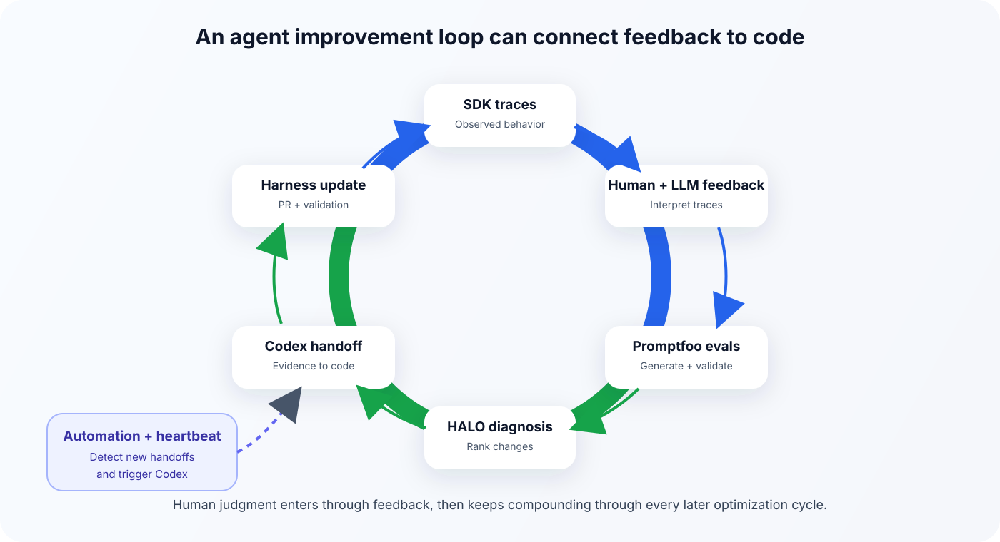
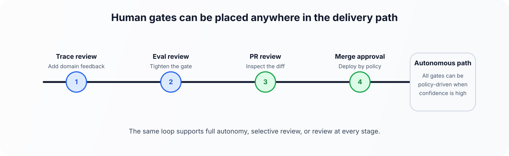

This notebook builds an improvement flywheel for an agent. We start with real traces, add human and model feedback, turn that feedback into evals, and use the resulting evidence to propose the next harness changes for Codex to implement.
You will:
- Create an OpenAI Agents SDK-backed financial analyst
- Run it on synthetic company data and capture traces
- Add example human feedback and LLM-generated feedback from those runs
- Turn that feedback into Promptfoo evals that can be rerun later
- Use HALO to rank the next harness changes and write a Codex-ready handoff
In this notebook, the harness is the full contract around the model, including instructions, tools, routing, output requirements, and validation checks.
The flywheel preserves what you learn from each run. Traces show what happened, feedback explains what mattered, evals make those expectations reusable, and Codex can act on the resulting change set.
What you will build

By the end, you will have:
- An OpenAI Agents SDK-backed financial analyst that reviews a fictional company’s diligence materials across five traced runs
- Human and LLM-generated feedback over those same traces
- An automatically generated Promptfoo eval suite
- A Promptfoo validation gate over the current agent behavior
- A HALO optimization pass over the traces, feedback, and eval results
- A developer-facing handoff to Codex so it can implement the recommended harness changes
The agent supports acquisition diligence for a fictional company. It reviews financial exports, customer data, contracts, security notes, board materials, and management narratives, then answers diligence questions with citations and reviewable artifacts.
The loop writes one file that carries the work forward: the generated codex_handoff.md file under ARTIFACT_DIR. It contains the full HALO diagnosis, the ranked recommendations, the evidence behind them, and the implementation guidance Codex needs for the next harness update.
The degree of automation is up to the developer. You can use the loop to propose a reviewed change set, or connect it to a workflow that opens, merges, and deploys pull requests automatically. A common starting point is a reviewed loop, where the system proposes the change set and a developer approves the diff before merge. As the eval gate becomes more trusted, the same handoff can support deeper automation. The core workflow is the same in either case: traces plus human and model feedback become concrete harness changes instead of remaining disconnected comments.
Compared with examples that stop at traces or evals, this notebook keeps traces, reviewer judgment, generated evals, optimization, and implementation handoff inside one runnable improvement loop.
Prerequisites
Run this notebook from the repository root after installing the Python dependencies used by the example:
python -m venv .venv
source .venv/bin/activate
pip install openai openai-agents halo-enginePromptfoo runs through npx, so you also need Node.js with npx available on your path.
Set an API key before running the notebook:
export OPENAI_API_KEY=...The example is intentionally live-only. The trace generation, model critique, eval generation, validation, and optimization steps all use fresh model outputs so the notebook demonstrates the actual loop rather than a scripted preview. The next cell exposes the model choices in one place so you can trade quality for cost by substituting cheaper models if desired.
With the default five traces, budget about 20 minutes for a full run, though model latency and network conditions will move that up or down. The longest sections are usually Step 3, which runs the traced agent calls, and Step 7, where HALO analyzes the full loop. The feedback, eval-generation, and Promptfoo cells also make live calls, but are typically shorter. Long-running cells print progress or elapsed time as they work.
%%capture
# Install or upgrade the Python dependencies used by this notebook.
%pip install --quiet --upgrade openai openai-agents halo-enginefrom __future__ import annotations
import asyncio
import hashlib
import json
import os
import re
import shutil
import subprocess
import sys
import tempfile
import time
import textwrap
import threading
from contextlib import contextmanager
from dataclasses import asdict, dataclass, field
from datetime import datetime, timezone
from importlib.metadata import version
from pathlib import Path
from typing import Any, Iterable, Iterator, Mapping
from IPython.display import Markdown, display
from openai import OpenAI
def find_project_root(start: Path | None = None) -> Path:
current = (start or Path.cwd()).resolve()
for candidate in [current, *current.parents]:
if (candidate / "registry.yaml").exists():
return candidate
return current
PROJECT_ROOT = find_project_root()
if not os.getenv("OPENAI_API_KEY"):
raise RuntimeError("Set OPENAI_API_KEY before running this live notebook.")
if shutil.which("npx") is None:
raise RuntimeError("Install Node.js with npx before running the Promptfoo eval gate.")
# Edit these in one place if you want to use lower-cost models for part of the loop.
AGENT_MODEL = os.getenv("OPENAI_AGENT_MODEL", "gpt-5.5")
ANALYSIS_MODEL = os.getenv("OPENAI_ANALYSIS_MODEL", "gpt-5.5")
EVAL_GENERATION_MODEL = os.getenv("OPENAI_EVAL_GENERATION_MODEL", ANALYSIS_MODEL)
JUDGE_MODEL = os.getenv("OPENAI_JUDGE_MODEL", ANALYSIS_MODEL)
HALO_MODEL = os.getenv("OPENAI_HALO_MODEL", ANALYSIS_MODEL)
PROMPTFOO_VERSION = os.getenv("PROMPTFOO_VERSION", "0.121.9")
client = OpenAI()
def format_duration(seconds: float) -> str:
minutes, remainder = divmod(int(round(seconds)), 60)
return f"{minutes}m {remainder:02d}s" if minutes else f"{remainder}s"
ARTIFACT_DIR = PROJECT_ROOT / "examples" / "agents_sdk" / "agent_improvement_loop_artifacts"
TRACE_DIR = ARTIFACT_DIR / "traces"
HALO_TRACE_PATH = ARTIFACT_DIR / "halo_traces" / "traces.jsonl"
if ARTIFACT_DIR.exists():
shutil.rmtree(ARTIFACT_DIR)
ARTIFACT_DIR.mkdir(exist_ok=True)
TRACE_DIR.mkdir(exist_ok=True)
HALO_TRACE_PATH.parent.mkdir(exist_ok=True)
print("Project root detected.")
print("Models:", {
"agent": AGENT_MODEL,
"analysis": ANALYSIS_MODEL,
"eval_generation": EVAL_GENERATION_MODEL,
"judge": JUDGE_MODEL,
"halo": HALO_MODEL,
"promptfoo": PROMPTFOO_VERSION,
})Project root detected.
Models: {'agent': 'gpt-5.5', 'analysis': 'gpt-5.5', 'eval_generation': 'gpt-5.5', 'judge': 'gpt-5.5', 'halo': 'gpt-5.5', 'promptfoo': '0.121.9'}Step 1. Create synthetic company data
The notebook creates fictional diligence materials for a company that might be reviewed during an acquisition. The data mixes structured exports with narrative markdown documents so the agent has to decide which sources deserve more weight.
Narrative markdown files in the synthetic data
| File | Why it is included |
|---|---|
overview.md |
Management’s top-level company summary |
product_strategy.md |
Roadmap context plus an unvalidated NRR estimate |
go_to_market.md |
Sales-motion context that should be checked against pipeline data |
board_deck.md |
A polished management narrative that can conflict with structured exports |
financials/revenue_recognition_notes.md |
Accounting context for launch-stage ARR treatment |
legal/contracts_summary.md |
Contract-level risk context |
legal/open_issues.md |
Open legal matters that should remain visible |
security/security_overview.md |
Security posture and certification wording |
sales/security_faq.md |
Sales-facing security language that may overstate the evidence |
hr/org_chart.md |
Operating context for leadership and staffing |
sales/pipeline_notes.md |
Qualitative pipeline commentary |
notes/qa_log.md |
Diligence questions and unresolved follow-ups |
The example generates the synthetic company data at runtime so it stays self-contained while still giving the agent a realistic mix of structured exports and narrative documents to analyze.
Define the synthetic source files
The next collapsed cell contains the source documents used to build the fictional company data.
from textwrap import dedent
WORKSPACE_FILES = {
"overview.md": """
# FictionalCorp XYZ
FictionalCorp XYZ is a revenue intelligence software company with annual SaaS subscriptions, usage add-ons, and launch-stage commitments.
Management reports FY2025 ARR of $43.0M and year-over-year growth of 71%.
Management reports no legal-entity customer above 15% of booked ARR after excluding launch-stage usage add-ons.
Legal summary: Management states legal matters are ordinary course and no contract terms should affect valuation.
""",
"product_strategy.md": """
# Product Strategy
Core product lines:
- Forecast Assist
- Pipeline Quality Monitor
- Renewal Risk Workbench
Product roadmap priority is enterprise workflow depth. Management expects usage add-ons to increase expansion revenue.
Sales leadership references a 122% NRR estimate in planning materials, but finance has not published official NRR and the estimate excludes selected downsell and churn adjustments.
""",
"go_to_market.md": """
# Go To Market
FictionalCorp XYZ sells to CRO and RevOps buyers through a direct sales motion.
The current plan assumes larger enterprise ACVs and partner-sourced pipeline. Pipeline conversion evidence should be checked against `sales/pipeline.csv`.
""",
"board_deck.md": """
# Board Packet - December 2025
- FY2025 ending ARR: $43.0M
- ARR growth: 71%
- Gross margin: 69%
- Cash burn: $2.9M per month
- Runway: 11 months
Management narrative: the company is positioned for efficient enterprise expansion.
ARR note: the headline ARR view includes signed launch-stage commitments and a usage true-up view used for board planning.
Management narrative: customer concentration is manageable when measured by legal entity and booked ARR.
""",
"financials/revenue_recognition_notes.md": """
# Revenue Recognition Notes
Finance treats `financials/arr_bridge.csv` as the controlled FY2025 ARR bridge.
The board deck ARR includes $2.8M of signed launch-stage commitments that were not live by 2025-12-31 and $1.1M of usage true-ups that finance does not classify as recurring ARR.
RevOps also circulates a bookings-adjusted ARR view of $40.8M. That view is useful for pipeline planning but should not be silently reconciled with the controlled ARR bridge.
""",
"legal/contracts_summary.md": """
# Contracts Summary
Standard customer contracts are annual SaaS agreements with security and DPA exhibits. The largest five customers account for $25.1M of ARR.
Management summary: legal matters are ordinary course and no contract terms should affect valuation.
Clause inventory has not been fully reconciled with this summary. Two strategic customer agreements are flagged for non-standard terms in `legal/clause_inventory.csv`.
""",
"legal/open_issues.md": """
# Open Legal Issues
Former reseller DataHarbor filed a breach-of-contract claim seeking $3.2M plus accelerated commissions. Counsel estimates loss is possible but not probable. A clause review also identified two strategic customer MSAs with non-standard change-of-control notice rights and uncapped confidentiality indemnity language.
""",
"security/security_overview.md": """
# Security Overview
SOC 2 Type I is complete. SOC 2 Type II fieldwork is in progress, and the Type II report has not been issued.
Customer security reviews should verify the exact certification status before relying on SOC 2 claims.
""",
"sales/security_faq.md": """
# Sales Security FAQ
Field guidance says Aurora is "SOC 2 complete" for late-stage enterprise deals.
Security team note: this wording was intended to refer to Type I readiness, not an issued Type II report. Do not use this FAQ as certification evidence without checking `security/security_overview.md`.
""",
"hr/org_chart.md": """
# Org Chart
- CEO
- CFO
- VP Sales
- VP Product
- Head of Security
Hiring plan assumes 14 net new GTM hires in 2026.
""",
"sales/pipeline_notes.md": """
# Pipeline Notes
Commit-stage pipeline includes $1.6M of DataHarbor-sourced opportunities that may be affected by the reseller dispute.
Northstar expansion pipeline assumes completion of SOC 2 Type II before procurement review. Finance has not included this expansion in controlled FY2025 ARR.
""",
"notes/qa_log.md": """
# Diligence Q&A Log
- NRR was requested. RevOps provided a 122% management estimate, but finance has not validated official NRR and says the estimate excludes downsold Northstar entities and a churned reseller-sourced account.
- CAC payback was requested but not provided.
- Top-two customer ARR equals $12.4M, or 34% of FY2025 ARR based on `customers/top_customers.csv`.
- Northstar Holdings parent-account ARR equals $12.4M, or 34% of FY2025 ARR based on `customers/account_hierarchy.csv`.
- Board ARR should not be silently reconciled to finance ARR; use `financials/revenue_recognition_notes.md` for the difference.
""",
"financials/arr_bridge.csv": """
metric,value_m
opening_arr_2025_m,21.58
new_arr_m,8.1
expansion_arr_m,3.2
contraction_arr_m,1.1
churn_arr_m,2.7
ending_arr_2025_m,36.9
bookings_adjusted_arr_m,40.8
""",
"financials/monthly_kpis.csv": """
month,ending_arr_m,new_arr_m,expansion_arr_m,churn_arr_m,gross_margin
2025-01,21.58,0.55,0.35,0.18,0.69
2025-02,23.28,0.59,0.37,0.20,0.69
2025-03,24.98,0.63,0.39,0.21,0.69
2025-04,26.69,0.67,0.41,0.22,0.69
2025-05,28.39,0.71,0.43,0.24,0.69
2025-06,30.09,0.75,0.45,0.26,0.69
2025-07,31.79,0.79,0.47,0.27,0.69
2025-09,33.50,0.83,0.49,0.28,0.69
2025-10,35.20,0.87,0.51,0.30,0.69
2025-12,36.90,0.91,0.53,0.32,0.69
""",
"financials/p_and_l.csv": """
period,revenue_m,gross_margin,opex_m,cash_burn_m,runway_months
FY2025,30.26,0.69,47.71,2.9,11
""",
"financials/retention_extract.csv": """
metric,value,status,notes
net_revenue_retention,122%,management_estimate_unvalidated,Sales deck estimate; excludes downsold Northstar entities and one churned reseller-sourced account.
gross_revenue_retention,84%,finance_partial,Preliminary 2025 cohort; usage feeds incomplete for two enterprise customers.
logo_retention,91%,finance_partial,"Includes legal entities, not parent-account rollups."
cac_payback_months,,not_provided,Requested by diligence team; no source schedule in dataroom.
""",
"customers/top_customers.csv": """
customer,parent_account,arr_m,arr_share,segment,renewal_date,inclusion_basis
Northstar Bank,Northstar Holdings,7.8,0.2114,Enterprise,2026-02-15,controlled_arr_bridge
Northstar Capital Markets,Northstar Holdings,4.6,0.1247,Enterprise,2026-04-01,controlled_arr_bridge
Helio Retail,Helio Retail,6.9,0.1870,Enterprise,2026-05-15,controlled_arr_bridge
BluePeak Logistics,BluePeak Logistics,3.6,0.0976,Mid-market,2026-06-30,controlled_arr_bridge
Summit Foods,Summit Foods,2.2,0.0596,Mid-market,2026-02-28,controlled_arr_bridge
""",
"customers/account_hierarchy.csv": """
legal_entity,parent_account,parent_arr_m,note
Northstar Bank,Northstar Holdings,12.4,Same procurement parent as Northstar Capital Markets.
Northstar Capital Markets,Northstar Holdings,12.4,Managed by separate RevOps owner but same parent renewal committee.
Helio Retail,Helio Retail,6.9,Standalone parent account.
BluePeak Logistics,BluePeak Logistics,3.6,Standalone parent account; renewal issue open.
""",
"customers/renewal_calendar.csv": """
customer,renewal_date,renewal_risk,notes
Northstar Bank,2026-02-15,medium,Expansion depends on completed SOC 2 Type II.
Northstar Capital Markets,2026-04-01,medium,Same parent procurement committee as Northstar Bank.
Helio Retail,2026-05-15,medium,Adoption below plan; forecast latency escalation remains in monitoring.
BluePeak Logistics,2026-06-30,high,Open CRM sync errors and renewal risk.
""",
"customers/customer_health.csv": """
customer,health,primary_risk,signal_date,caveat
Northstar Bank,green,none flagged,2025-10-31,"Northstar health is recorded by legal entity, not parent account."
Northstar Capital Markets,yellow,monitor adoption,2025-10-31,"Northstar health is recorded by legal entity, not parent account."
Helio Retail,yellow,monitor adoption,2025-12-15,
BluePeak Logistics,red,renewal risk,2025-12-15,
Summit Foods,yellow,monitor adoption,2025-12-15,
""",
"legal/clause_inventory.csv": """
customer,issue,exposure,confidence
Northstar Bank,change_of_control_notice,customer may request transition plan within 10 days of a control transaction,medium
Helio Retail,uncapped_confidentiality_indemnity,uncapped liability for confidentiality breach; not reflected in management summary,high
BluePeak Logistics,service_credit_carveout,credits can exceed one month fees if CRM sync SLA missed for two consecutive months,medium
""",
"sales/pipeline.csv": """
stage,pipeline_m,historical_close_rate,quality_note
commit,6.1,0.39,Includes security-dependent Northstar expansion.
best_case,9.7,0.28,Includes DataHarbor-sourced opportunities under dispute.
early,18.2,0.08,High volume but low conversion quality.
""",
"support/escalations.csv": """
customer,severity,issue,status
Northstar Capital Markets,medium,Forecast latency,monitoring
BluePeak Logistics,high,CRM sync errors,open
Northstar Bank,medium,Security questionnaire blocked pending SOC 2 Type II report,open
""",
}Materialize the synthetic data
Write the source files to disk, add a manifest, and inspect the generated dataset.
def write_workspace_file(path: Path, content: str) -> None:
path.parent.mkdir(parents=True, exist_ok=True)
path.write_text(dedent(content).strip() + "\n", encoding="utf-8")
def generate_acquisition_diligence_workspace() -> Path:
"""Create the synthetic acquisition-diligence workspace directly from notebook data."""
dataroom = ARTIFACT_DIR / "synthetic_dataroom"
shutil.rmtree(dataroom, ignore_errors=True)
for relative_path, content in WORKSPACE_FILES.items():
write_workspace_file(dataroom / relative_path, content)
manifest = {
"company_name": "FictionalCorp XYZ",
"scenario": "adversarial_diligence",
"files": sorted(str(path.relative_to(dataroom)) for path in dataroom.rglob("*") if path.is_file()),
}
write_workspace_file(dataroom / "manifest.json", json.dumps(manifest, indent=2))
return dataroom
dataset = generate_acquisition_diligence_workspace()
files = sorted(str(path.relative_to(dataset)) for path in dataset.rglob("*") if path.is_file())
print(f"Dataset created: {len(files)} files")Dataset created: 24 filesStep 2. Define the Agents SDK-backed analyst
The example agent performs acquisition diligence on a fictional SaaS company being reviewed as a possible acquisition target. The case materials contain both structured exports and management narratives. Some sources agree, some conflict, and some important claims are only partially supported. That gives us a realistic reason to improve the harness over time.
The agent answers questions for an investment team using only the supplied company data. It should prefer structured financial evidence over narrative summaries when they disagree, preserve uncertainty when evidence is missing, and leave behind artifacts that another reviewer can inspect.
The OpenAI Agents SDK provides the managed runner, sandbox execution, model settings, and tracing hooks this workflow needs. Together, the prompt, tools, routing rules, output requirements, and validation checks form the current agent harness.
Artifacts generated by the agent
| Artifact | Why the agent writes it |
|---|---|
summary_answer.md |
The concise answer returned to the user |
investment_memo.md |
A fuller review artifact for diligence readers |
risk_register.json |
Structured risks with evidence that downstream systems can inspect |
open_questions.md |
Missing evidence or unresolved questions that should stay visible |
citations.json |
A machine-readable link from claims to source files |
evidence_table.csv |
A tabular audit trail of claims and supporting sources |
These artifacts keep the work reviewable by preserving supporting evidence, unresolved questions, and required files alongside the final answer.
Failure modes to watch for
This notebook is designed to surface failures such as:
- Treating management narrative as an official metric when the structured exports disagree
- Reporting an unsupported NRR estimate as if finance had validated it
- Collapsing parent-account concentration into a weaker legal-entity view
- Saying “SOC 2 complete” when the evidence only supports Type I
- Producing a polished answer while leaving citations, risk files, or evidence artifacts incomplete
Define the harness schema
Start with small data structures for the model settings and promoted agent configuration. These make the harness explicit so later optimization can target more than prompt wording.
@dataclass(frozen=True)
class ModelSettings:
agent_model: str
reasoning_effort: str
@dataclass(frozen=True)
class AgentConfig:
version: str
system_prompt: str
model_settings: ModelSettings
tool_policy: dict[str, Any]
eval_metadata: dict[str, Any]
path: Path = field(default_factory=lambda: Path("notebook_defined_agent_config"))
@property
def required_artifacts(self) -> list[str]:
return self.tool_policy["required_artifacts"]
def build_instructions(self) -> str:
return "\n\n".join([
self.system_prompt,
format_policy_section("Tool policy", self.tool_policy),
f"Runtime config:\n- Config version: `{self.version}`.\n- Treat this config as the promoted runtime contract.\n- Do not modify the runtime config during the run.",
]) + "\n"
def format_policy_section(title: str, policy: dict[str, Any]) -> str:
lines = [f"{title}:"]
for key, value in policy.items():
lines.extend(format_policy_value(key, value))
return "\n".join(lines)
def format_policy_value(key: str, value: Any, indent: int = 0) -> list[str]:
prefix = " " * indent
if isinstance(value, dict):
lines = [f"{prefix}- {key}:"]
for child_key, child_value in value.items():
lines.extend(format_policy_value(child_key, child_value, indent + 1))
return lines
if isinstance(value, list):
lines = [f"{prefix}- {key}:"]
for item in value:
if isinstance(item, dict):
lines.append(f"{prefix} -")
for child_key, child_value in item.items():
lines.extend(format_policy_value(child_key, child_value, indent + 2))
else:
lines.append(f"{prefix} - {item}")
return lines
return [f"{prefix}- {key}: {value}"]Configure instructions and policies
The system prompt states the evidence rules, the tool policy defines what the agent may read and write, and the eval metadata records which version of the harness is currently promoted.
SYSTEM_PROMPT = """
You are a diligence analyst reviewing a synthetic company dataroom.
Evidence scope:
- Use only files under `data/`.
- Do not use outside knowledge or assumptions.
- Prefer structured CSV/JSON exports over narrative files when they conflict.
Runtime tools:
- The sandbox starts in the mounted workspace root. Use workspace-relative paths such as `data/...` and `outputs/...`; when running shell commands, omit `workdir` or use a relative path only. Never pass absolute temporary paths.
- `data/tools/check_evidence_coverage.py`: use this before finalizing answers with material claims. Create a JSON list of claims with `claim`, `claim_type`, and `citations`, then run `python data/tools/check_evidence_coverage.py --claims-json <path> --dataset-root data --output outputs/evidence_coverage.json`.
- `data/tools/validate_output_contract.py`: run this after writing the required artifacts and before final response with `python data/tools/validate_output_contract.py --outputs outputs --dataset-root data --output outputs/output_contract_validation.json`.
- If either tool reports unsupported claims, missing citations, missing files, malformed JSON, or empty artifacts, revise the answer/artifacts before finalizing. If the evidence is unavailable, say the claim is unknown or unsupported.
Citation rules:
- Every material claim must cite one or more source filenames.
- Cite filenames exactly as workspace-relative paths, for example `financials/arr_bridge.csv`.
- Do not cite files that do not support the claim.
Unknown-handling rules:
- If evidence is missing, state that the answer is unknown or unsupported.
- Never fabricate missing numbers.
- If evidence conflicts, state the conflict explicitly instead of reconciling silently.
Output rules:
- Write `outputs/summary_answer.md`.
- Write `outputs/investment_memo.md`.
- Write `outputs/risk_register.json`.
- Write `outputs/open_questions.md`.
- Write `outputs/citations.json`.
- Write `outputs/evidence_table.csv`.
""".strip()
MODEL_SETTINGS = {
"agent_model": AGENT_MODEL,
"reasoning_effort": "medium",
}
TOOL_POLICY = {
"allowed_data_root": "data",
"writable_output_root": "outputs",
"required_artifacts": [
"summary_answer.md",
"investment_memo.md",
"risk_register.json",
"open_questions.md",
"citations.json",
"evidence_table.csv",
],
"evidence_preference": [
"Prefer structured CSV or JSON exports over narrative summaries when sources conflict.",
"Treat board materials as useful narrative evidence, not the final system of record for metrics.",
"Surface unresolved conflicts instead of silently reconciling them.",
],
"runtime_tools": [
{
"path": "data/tools/check_evidence_coverage.py",
"purpose": "Audit drafted material claims against cited dataroom files before final answer.",
"recommended_command": "python data/tools/check_evidence_coverage.py --claims-json outputs/claim_audit_input.json --dataset-root data --output outputs/evidence_coverage.json",
},
{
"path": "data/tools/validate_output_contract.py",
"purpose": "Validate required output artifacts, JSON shape, and citation/source file references.",
"recommended_command": "python data/tools/validate_output_contract.py --outputs outputs --dataset-root data --output outputs/output_contract_validation.json",
},
],
"unknown_handling": [
"Say unknown or unsupported when a metric is absent.",
"Do not infer missing values from adjacent metrics.",
"Keep facts, inferences, and open questions separate.",
],
"mutation_policy": [
"Write only to the configured outputs directory.",
"Do not modify dataroom inputs.",
"Do not modify runtime agent configuration during a run.",
],
}
EVAL_METADATA = {
"version": "v001",
"status": "promoted",
"created_by": "manual_baseline",
"promotion_gate": "manual_review",
"description": "Baseline diligence analyst config with strict dataroom grounding, citation, unknown-handling, and artifact rules.",
}
agent_config = AgentConfig(
version=EVAL_METADATA["version"],
system_prompt=SYSTEM_PROMPT,
model_settings=ModelSettings(**MODEL_SETTINGS),
tool_policy=TOOL_POLICY,
eval_metadata=EVAL_METADATA,
)Inspect the agent config
This compact view shows the promoted config version, the selected models, the required artifacts, and the runtime tools the agent can use.
required_artifacts_md = "\n".join(
f"- `{artifact}`" for artifact in agent_config.required_artifacts
)
runtime_tools_md = "\n".join(
f"- `{tool['path']}` — {tool['purpose']}"
for tool in agent_config.tool_policy["runtime_tools"]
)
display(Markdown(f"""
### Agent config summary
- **Version:** `{agent_config.version}`
- **Agent model:** `{agent_config.model_settings.agent_model}`
- **Reasoning effort:** `{agent_config.model_settings.reasoning_effort}`
**Required artifacts**
{required_artifacts_md}
**Runtime tools**
{runtime_tools_md}
"""))Agent config summary
- Version:
v001 - Agent model:
gpt-5.5 - Reasoning effort:
medium
Required artifacts
summary_answer.mdinvestment_memo.mdrisk_register.jsonopen_questions.mdcitations.jsonevidence_table.csv
Runtime tools
data/tools/check_evidence_coverage.py— Audit drafted material claims against cited dataroom files before final answer.data/tools/validate_output_contract.py— Validate required output artifacts, JSON shape, and citation/source file references.
Add validation tools
The next helpers create two local tools inside the workspace: one checks whether drafted claims cite real dataroom files, and the other verifies that the required output artifacts exist and have the expected shape. The code is hidden by default to save space, but you can expand it if you want to inspect the implementation.
CHECK_EVIDENCE_COVERAGE = r'''#!/usr/bin/env python3
import argparse
import json
from pathlib import Path
def main() -> None:
parser = argparse.ArgumentParser(description="Audit whether drafted claims cite existing dataroom files.")
parser.add_argument("--claims-json", type=Path, required=True)
parser.add_argument("--dataset-root", type=Path, default=Path("data"))
parser.add_argument("--output", type=Path, default=Path("outputs/evidence_coverage.json"))
args = parser.parse_args()
claims = json.loads(args.claims_json.read_text(encoding="utf-8"))
if not isinstance(claims, list):
raise ValueError("--claims-json must contain a JSON list of claim objects")
result = check_evidence_coverage(claims, args.dataset_root)
args.output.parent.mkdir(parents=True, exist_ok=True)
args.output.write_text(json.dumps(result, indent=2) + "\n", encoding="utf-8")
print(json.dumps(result, indent=2))
def check_evidence_coverage(claims: list[dict], dataset_root: Path) -> dict:
supported = []
unsupported = []
missing_citations = []
for raw in claims:
claim = str(raw.get("claim") or "").strip()
claim_type = str(raw.get("claim_type") or "claim")
citations = [str(item).strip().removeprefix("data/") for item in raw.get("citations") or [] if str(item).strip()]
row = {"claim": claim, "claim_type": claim_type, "citations": citations}
if not citations:
missing_citations.append({**row, "issue": "No citation provided."})
continue
missing = [citation for citation in citations if not (dataset_root / citation).exists()]
if missing:
unsupported.append({**row, "issue": f"Missing cited file(s): {', '.join(missing)}"})
else:
supported.append(row)
return {
"supported_claims": supported,
"unsupported_claims": unsupported,
"missing_citations": missing_citations,
"recommended_caveats": [
"Add valid source filenames or mark unsupported claims as unknown before final answer."
],
"passed": not unsupported and not missing_citations,
}
if __name__ == "__main__":
main()
'''
VALIDATE_OUTPUT_CONTRACT = r'''#!/usr/bin/env python3
import argparse
import csv
import json
from pathlib import Path
REQUIRED_FILES = [
"summary_answer.md",
"investment_memo.md",
"risk_register.json",
"open_questions.md",
"citations.json",
"evidence_table.csv",
]
def main() -> None:
parser = argparse.ArgumentParser(description="Validate diligence output artifacts before final answer.")
parser.add_argument("--outputs", type=Path, default=Path("outputs"))
parser.add_argument("--dataset-root", type=Path, default=Path("data"))
parser.add_argument("--output", type=Path, default=Path("outputs/output_contract_validation.json"))
args = parser.parse_args()
result = validate_output_contract(args.outputs, args.dataset_root)
args.output.parent.mkdir(parents=True, exist_ok=True)
args.output.write_text(json.dumps(result, indent=2) + "\n", encoding="utf-8")
print(json.dumps(result, indent=2))
def validate_output_contract(outputs: Path, dataset_root: Path) -> dict:
issues = []
for filename in REQUIRED_FILES:
path = outputs / filename
if not path.exists():
issues.append({"file": filename, "issue": "missing required artifact"})
elif path.stat().st_size == 0:
issues.append({"file": filename, "issue": "empty required artifact"})
risks = _read_json(outputs / "risk_register.json", default=[])
citations = _read_json(outputs / "citations.json", default=[])
if not isinstance(risks, list):
issues.append({"file": "risk_register.json", "issue": "must be a JSON list"})
risks = []
if not isinstance(citations, list):
issues.append({"file": "citations.json", "issue": "must be a JSON list"})
citations = []
for index, risk in enumerate(risks):
evidence = risk.get("evidence") if isinstance(risk, dict) else None
if not evidence:
issues.append({"file": "risk_register.json", "risk_index": index, "issue": "risk lacks evidence"})
continue
missing = [str(item).removeprefix("data/") for item in evidence if not (dataset_root / str(item).removeprefix("data/")).exists()]
if missing:
issues.append({"file": "risk_register.json", "risk_index": index, "issue": f"missing evidence file(s): {', '.join(missing)}"})
for index, citation in enumerate(citations):
sources = citation.get("sources") if isinstance(citation, dict) else None
if not sources:
issues.append({"file": "citations.json", "citation_index": index, "issue": "citation lacks sources"})
continue
missing = [str(item).removeprefix("data/") for item in sources if not (dataset_root / str(item).removeprefix("data/")).exists()]
if missing:
issues.append({"file": "citations.json", "citation_index": index, "issue": f"missing source file(s): {', '.join(missing)}"})
try:
with (outputs / "evidence_table.csv").open(newline="", encoding="utf-8") as handle:
rows = list(csv.DictReader(handle))
if rows and not {"claim_id", "claim", "sources"}.issubset(rows[0].keys()):
issues.append({"file": "evidence_table.csv", "issue": "must include claim_id, claim, and sources columns"})
except FileNotFoundError:
pass
return {"passed": not issues, "issues": issues, "required_files": REQUIRED_FILES}
def _read_json(path: Path, default):
if not path.exists():
return default
try:
return json.loads(path.read_text(encoding="utf-8"))
except json.JSONDecodeError as exc:
return {"error": str(exc)}
if __name__ == "__main__":
main()
'''
def write_runtime_tools(dataset_dir: Path) -> list[str]:
tools_dir = dataset_dir / "tools"
tools_dir.mkdir(parents=True, exist_ok=True)
files = {
"check_evidence_coverage.py": CHECK_EVIDENCE_COVERAGE,
"validate_output_contract.py": VALIDATE_OUTPUT_CONTRACT,
}
written: list[str] = []
for filename, content in files.items():
path = tools_dir / filename
path.write_text(content, encoding="utf-8")
path.chmod(0o755)
written.append(str(path.relative_to(dataset_dir)))
return writtenBuild each user turn
The prompt builder adds task-specific guidance only when it is needed, such as memo formatting, separate risk categories, or strict handling for unsupported NRR claims.
def build_user_prompt(question: str, agent_config: Any | None = None) -> str:
config_line = ""
if agent_config is not None:
config_line = f"\nActive agent config: `{agent_config.version}` from `{agent_config.path}`.\n"
memo_instruction = ""
if _asks_for_memo(question):
memo_instruction = (
"\nThe user asked for a memo-style deliverable. Return the memo content inline in "
"your final answer and also write the required output artifacts. Do not answer only "
"with a status update or artifact path list.\n"
)
risk_category_instruction = ""
if _asks_for_top_risk_categories(question):
risk_category_instruction = (
"\nStructure the final answer with separate sections for Financial, Legal, and "
"Customer concentration risks. Do not collapse customer concentration into the "
"financial category.\n"
)
unsupported_metric_instruction = ""
if _asks_for_net_revenue_retention(question):
unsupported_metric_instruction = (
"\nFor net revenue retention, report the metric only if the dataroom directly "
"provides NRR/net revenue retention. Do not derive or estimate an NRR percentage "
"from ARR bridge components unless the user explicitly asks for an estimate. If "
"the metric is absent, say it is unknown or unsupported, cite the searched "
"source files, and separate missing evidence from any directional inference.\n"
)
return f"""
Answer this diligence question using only the mounted dataroom:
{question}
{config_line}
{memo_instruction}
{risk_category_instruction}
{unsupported_metric_instruction}
Also write the required output artifacts. Keep the answer concise, grounded, and citation-heavy.
Use workspace-relative paths for shell commands and omit `workdir`; do not pass absolute temporary paths.
"""
def _asks_for_memo(question: str) -> bool:
lower = question.lower()
return "memo" in lower or "ic-style" in lower or "investment committee" in lower
def _asks_for_top_risk_categories(question: str) -> bool:
lower = question.lower()
return all(term in lower for term in ("financial", "legal", "customer")) and "risk" in lower
def _asks_for_net_revenue_retention(question: str) -> bool:
lower = question.lower()
return "net revenue retention" in lower or "nrr" in lowerExport traces for later optimization
The local exporter converts Agents SDK events into the OpenTelemetry-style JSONL that HALO can read later. It is implementation-heavy, so the code stays collapsed by default.
Configure the trace exporter
Set up the exporter object that receives Agents SDK spans and writes one JSONL line per span.
EXPORT_SCHEMA_VERSION = 1
OBSERVATION_KIND_BY_TYPE = {
"agent": "AGENT",
"generation": "LLM",
"response": "LLM",
"function": "TOOL",
"mcp_tools": "TOOL",
"handoff": "CHAIN",
"guardrail": "GUARDRAIL",
"custom": "SPAN",
"task": "SPAN",
"turn": "SPAN",
"transcription": "SPAN",
"speech": "SPAN",
"speech_group": "SPAN",
}
@dataclass(frozen=True)
class HaloExportContext:
project_id: str
service_name: str
service_version: str | None = None
deployment_environment: str | None = None
extra_resource_attributes: Mapping[str, Any] | None = None
def setup_halo_tracing(
path: str | Path,
*,
project_id: str = "synthetic-dataroom-agent",
service_name: str = "financial-diligence-analyst",
service_version: str | None = None,
deployment_environment: str | None = None,
extra_resource_attributes: Mapping[str, Any] | None = None,
):
from agents import set_trace_processors
trace_path = Path(path)
trace_path.parent.mkdir(parents=True, exist_ok=True)
processor = HaloJsonlTraceProcessor(
trace_path,
ctx=HaloExportContext(
project_id=project_id,
service_name=service_name,
service_version=service_version,
deployment_environment=deployment_environment,
extra_resource_attributes=extra_resource_attributes,
),
)
# Use only the local exporter for this cookbook workflow.
# Hosted trace ingestion may be unavailable in some environments (for example ZDR orgs).
set_trace_processors([processor])
return processor
class HaloJsonlTraceProcessor:
def __init__(self, path: Path, *, ctx: HaloExportContext):
self._path = path
self._ctx = ctx
self._lock = threading.Lock()
self._handle = path.open("a", encoding="utf-8")
self._trace_meta: dict[str, tuple[str | None, str | None, dict[str, Any]]] = {}
def on_trace_start(self, trace) -> None: # noqa: ANN001
data = trace.export() or {}
trace_id = _strip_prefix(data.get("id"), "trace_") or ""
metadata = data.get("metadata") if isinstance(data.get("metadata"), dict) else {}
self._trace_meta[trace_id] = (
data.get("workflow_name"),
data.get("group_id"),
metadata,
)
def on_trace_end(self, trace) -> None: # noqa: ANN001
data = trace.export() or {}
trace_id = _strip_prefix(data.get("id"), "trace_") or ""
self._trace_meta.pop(trace_id, None)
def on_span_start(self, span) -> None: # noqa: ANN001
return None
def on_span_end(self, span) -> None: # noqa: ANN001
exported = span.export() or {}
trace_id = _strip_prefix(exported.get("trace_id"), "trace_") or ""
workflow_name, group_id, trace_metadata = self._trace_meta.get(trace_id, (None, None, {}))
line = span_to_halo_jsonl_line(
span,
ctx=self._ctx,
workflow_name=workflow_name,
group_id=group_id,
trace_metadata=trace_metadata,
)
encoded = json.dumps(line, separators=(",", ":"), ensure_ascii=False, default=str)
with self._lock:
self._handle.write(encoded)
self._handle.write("\n")
def shutdown(self) -> None:
with self._lock:
try:
self._handle.flush()
self._handle.close()
except Exception:
pass
def force_flush(self) -> None:
with self._lock:
self._handle.flush()Map SDK spans into HALO-readable fields
These helpers translate each SDK span type into the attributes HALO will inspect later.
def span_to_halo_jsonl_line(
span,
*,
ctx: HaloExportContext,
workflow_name: str | None = None,
group_id: str | None = None,
trace_metadata: Mapping[str, Any] | None = None,
) -> dict[str, Any]:
raw = span.export() or {}
span_data = raw.get("span_data") or {}
span_type = str(span_data.get("type") or "custom")
error = raw.get("error")
resource_attributes: dict[str, Any] = {"service.name": ctx.service_name}
if ctx.service_version:
resource_attributes["service.version"] = ctx.service_version
if ctx.deployment_environment:
resource_attributes["deployment.environment"] = ctx.deployment_environment
if ctx.extra_resource_attributes:
resource_attributes.update(ctx.extra_resource_attributes)
attributes, projection = _attributes_for_span_type(span_type, span_data)
if workflow_name:
attributes["agent.workflow.name"] = workflow_name
if group_id:
attributes["agent.workflow.group_id"] = group_id
for key, value in (trace_metadata or {}).items():
if _json_safe(value):
attributes[f"agent.trace_metadata.{key}"] = value
else:
attributes[f"agent.trace_metadata.{key}"] = _json(value)
attributes.update(
{
"inference.export.schema_version": EXPORT_SCHEMA_VERSION,
"inference.project_id": ctx.project_id,
"inference.observation_kind": OBSERVATION_KIND_BY_TYPE.get(span_type, "SPAN"),
"inference.llm.provider": projection.get("llm_provider"),
"inference.llm.model_name": projection.get("llm_model_name"),
"inference.llm.input_tokens": projection.get("input_tokens"),
"inference.llm.output_tokens": projection.get("output_tokens"),
"inference.llm.cost.total": projection.get("cost_total"),
"inference.user_id": projection.get("user_id"),
"inference.session_id": group_id,
"inference.agent_name": projection.get("agent_name") or "",
}
)
return {
"trace_id": _strip_prefix(raw.get("trace_id"), "trace_") or "",
"span_id": _strip_prefix(raw.get("id"), "span_") or "",
"parent_span_id": _strip_prefix(raw.get("parent_id"), "span_") or "",
"trace_state": "",
"name": _span_name(span_type, span_data),
"kind": _span_kind(span_type),
"start_time": _to_otlp_timestamp(raw.get("started_at")),
"end_time": _to_otlp_timestamp(raw.get("ended_at")),
"status": {
"code": "STATUS_CODE_ERROR" if error else "STATUS_CODE_OK",
"message": str((error or {}).get("message") or ""),
},
"resource": {"attributes": resource_attributes},
"scope": {"name": "openai-agents-sdk", "version": _sdk_version()},
"attributes": {key: value for key, value in attributes.items() if value is not None},
}
def _attributes_for_span_type(
span_type: str,
data: Mapping[str, Any],
) -> tuple[dict[str, Any], dict[str, Any]]:
if span_type == "agent":
return _agent_attrs(data)
if span_type == "generation":
return _generation_attrs(data)
if span_type == "response":
return _response_attrs(data)
if span_type == "function":
return _function_attrs(data)
if span_type == "mcp_tools":
return _mcp_tools_attrs(data)
if span_type == "handoff":
return _handoff_attrs(data)
if span_type == "guardrail":
return _guardrail_attrs(data)
return _custom_attrs(span_type, data)
def _agent_attrs(data: Mapping[str, Any]) -> tuple[dict[str, Any], dict[str, Any]]:
name = data.get("name") or ""
return _drop_none(
{
"openinference.span.kind": "AGENT",
"agent.name": name,
"agent.handoffs": _json(data.get("handoffs")),
"agent.tools": _json(data.get("tools")),
"agent.output_type": data.get("output_type"),
}
), {"agent_name": name}
def _generation_attrs(data: Mapping[str, Any]) -> tuple[dict[str, Any], dict[str, Any]]:
usage = data.get("usage") or {}
input_messages = data.get("input") or []
output_messages = data.get("output") or []
attrs: dict[str, Any] = {
"openinference.span.kind": "LLM",
"llm.provider": "openai",
"llm.model_name": data.get("model"),
"llm.invocation_parameters": _json(data.get("model_config")),
"llm.input_messages": _json(list(input_messages)),
"llm.output_messages": _json(list(output_messages)),
"llm.token_count.prompt": _int(usage.get("input_tokens") or usage.get("prompt_tokens")),
"llm.token_count.completion": _int(
usage.get("output_tokens") or usage.get("completion_tokens")
),
"llm.token_count.total": _int(usage.get("total_tokens")),
}
attrs.update(_expand_messages("llm.input_messages", input_messages))
attrs.update(_expand_messages("llm.output_messages", output_messages))
return _drop_none(attrs), {
"llm_provider": "openai",
"llm_model_name": data.get("model"),
"input_tokens": _int(usage.get("input_tokens") or usage.get("prompt_tokens")),
"output_tokens": _int(usage.get("output_tokens") or usage.get("completion_tokens")),
}
def _response_attrs(data: Mapping[str, Any]) -> tuple[dict[str, Any], dict[str, Any]]:
usage = data.get("usage") or {}
return _drop_none(
{
"openinference.span.kind": "LLM",
"llm.provider": "openai",
"llm.response.id": data.get("response_id"),
"llm.token_count.prompt": _int(usage.get("input_tokens") or usage.get("prompt_tokens")),
"llm.token_count.completion": _int(
usage.get("output_tokens") or usage.get("completion_tokens")
),
"llm.token_count.total": _int(usage.get("total_tokens")),
}
), {
"llm_provider": "openai",
"input_tokens": _int(usage.get("input_tokens") or usage.get("prompt_tokens")),
"output_tokens": _int(usage.get("output_tokens") or usage.get("completion_tokens")),
}
def _function_attrs(data: Mapping[str, Any]) -> tuple[dict[str, Any], dict[str, Any]]:
return _drop_none(
{
"openinference.span.kind": "TOOL",
"tool.name": data.get("name"),
"input.value": data.get("input"),
"output.value": data.get("output"),
"mcp.data": _json(data.get("mcp_data")),
}
), {}
def _mcp_tools_attrs(data: Mapping[str, Any]) -> tuple[dict[str, Any], dict[str, Any]]:
return _drop_none(
{
"openinference.span.kind": "TOOL",
"mcp.server": data.get("server"),
"mcp.tools.listed": _json(data.get("result")),
}
), {}
def _handoff_attrs(data: Mapping[str, Any]) -> tuple[dict[str, Any], dict[str, Any]]:
return _drop_none(
{
"openinference.span.kind": "CHAIN",
"agent.handoff.from": data.get("from_agent"),
"agent.handoff.to": data.get("to_agent"),
}
), {"agent_name": data.get("to_agent")}
def _guardrail_attrs(data: Mapping[str, Any]) -> tuple[dict[str, Any], dict[str, Any]]:
return _drop_none(
{
"openinference.span.kind": "GUARDRAIL",
"guardrail.name": data.get("name"),
"guardrail.triggered": bool(data.get("triggered")),
}
), {}
def _custom_attrs(span_type: str, data: Mapping[str, Any]) -> tuple[dict[str, Any], dict[str, Any]]:
attrs: dict[str, Any] = {
"openinference.span.kind": "CHAIN",
"sdk.span.type": span_type,
}
if data.get("name"):
attrs["sdk.span.name"] = data.get("name")
payload = data.get("data") or {}
if isinstance(payload, Mapping):
for key, value in payload.items():
attrs[f"sdk.data.{key}"] = value if _json_safe(value) else _json(value)
if "usage" in data:
attrs["llm.token_count.total"] = _int((data.get("usage") or {}).get("total_tokens"))
return _drop_none(attrs), {}Normalize helper values
The final helpers keep IDs, timestamps, and serialized values consistent across exported spans.
def _strip_prefix(value: Any, prefix: str) -> str | None:
if not value:
return None
text = str(value)
return text[len(prefix) :] if text.startswith(prefix) else text
def _to_otlp_timestamp(value: str | None) -> str:
if not value:
return ""
parsed = datetime.fromisoformat(value)
if parsed.tzinfo is None:
parsed = parsed.replace(tzinfo=timezone.utc)
parsed = parsed.astimezone(timezone.utc)
return parsed.strftime("%Y-%m-%dT%H:%M:%S.") + f"{parsed.microsecond:06d}000Z"
def _span_kind(span_type: str) -> str:
return "SPAN_KIND_CLIENT" if span_type in {"generation", "response"} else "SPAN_KIND_INTERNAL"
def _span_name(span_type: str, data: Mapping[str, Any]) -> str:
if data.get("name"):
return f"{span_type}.{data['name']}"
if data.get("model"):
return f"{span_type}.{data['model']}"
return span_type
def _expand_messages(prefix: str, messages: Iterable[Mapping[str, Any]]) -> dict[str, Any]:
attrs: dict[str, Any] = {}
for index, message in enumerate(messages or []):
if not isinstance(message, Mapping):
continue
role = message.get("role")
content = message.get("content")
if role is not None:
attrs[f"{prefix}.{index}.message.role"] = role
if isinstance(content, str):
attrs[f"{prefix}.{index}.message.content"] = content
elif content is not None:
attrs[f"{prefix}.{index}.message.content"] = _json(content)
for tool_index, tool_call in enumerate(message.get("tool_calls") or []):
function = (tool_call or {}).get("function") or {}
attrs[f"{prefix}.{index}.message.tool_calls.{tool_index}.tool_call.id"] = (
tool_call or {}
).get("id")
attrs[
f"{prefix}.{index}.message.tool_calls.{tool_index}.tool_call.function.name"
] = function.get("name")
attrs[
f"{prefix}.{index}.message.tool_calls.{tool_index}.tool_call.function.arguments"
] = function.get("arguments")
if message.get("tool_call_id"):
attrs[f"{prefix}.{index}.message.tool_call_id"] = message["tool_call_id"]
if message.get("name"):
attrs[f"{prefix}.{index}.message.name"] = message["name"]
return {key: value for key, value in attrs.items() if value is not None}
def _json(value: Any) -> str | None:
if value is None:
return None
return json.dumps(value, default=str, separators=(",", ":"))
def _json_safe(value: Any) -> bool:
return isinstance(value, (str, int, float, bool)) or value is None
def _int(value: Any) -> int | None:
if value is None:
return None
try:
return int(value)
except (TypeError, ValueError):
return None
def _drop_none(values: Mapping[str, Any]) -> dict[str, Any]:
return {key: value for key, value in values.items() if value is not None}
def _sdk_version() -> str:
try:
return version("openai-agents")
except Exception:
return "unknown"Run the SDK agent
run_sdk_agent() calls the Agents SDK runner directly while handling the repeated setup around each traced run: mounting the data, attaching tracing, executing the agent, and collecting the output artifacts.
async def run_sdk_agent(
dataset_dir: Path,
output_dir: Path,
question: str,
model: str,
agent_config: AgentConfig,
trace_id: str | None = None,
trace_metadata: dict[str, Any] | None = None,
halo_trace_path: str | Path | None = None,
halo_project_id: str = "financial_diligence_analyst_optimization_context",
) -> str:
from agents import ModelSettings as SDKModelSettings
from agents import Runner, custom_span, flush_traces, trace
from agents.run import RunConfig
from agents.sandbox import Manifest, SandboxAgent, SandboxRunConfig
from agents.sandbox.entries import Dir, LocalDir
from agents.sandbox.sandboxes.unix_local import UnixLocalSandboxClient
from openai.types.shared import Reasoning
output_dir.mkdir(parents=True, exist_ok=True)
with staged_dataset_mount(dataset_dir) as staged_dataset_dir:
write_runtime_manifest(staged_dataset_dir)
reasoning = Reasoning(effort=agent_config.model_settings.reasoning_effort)
agent = SandboxAgent(
name="Synthetic dataroom diligence analyst",
model=model,
model_settings=SDKModelSettings(reasoning=reasoning),
instructions=agent_config.build_instructions(),
default_manifest=Manifest(
entries={
"data": LocalDir(src=staged_dataset_dir),
"outputs": Dir(),
}
),
)
client = UnixLocalSandboxClient()
session = None
halo_processor = None
if halo_trace_path is not None:
halo_processor = setup_halo_tracing(
halo_trace_path,
project_id=halo_project_id,
service_version=agent_config.version,
deployment_environment="notebook" if trace_metadata else None,
extra_resource_attributes={
"agent.config.version": agent_config.version,
"agent.config.path": str(agent_config.path),
},
)
trace_context = (
trace(
workflow_name="Synthetic dataroom diligence",
trace_id=trace_id,
metadata=trace_metadata,
)
if trace_id
else None
)
if trace_context is not None:
trace_context.__enter__()
try:
with custom_span(
"sandbox_workspace",
{
"tool.name": "sandbox_workspace",
"tool.input": {
"mounted": "data",
"writable": "outputs",
"dataset_dir": str(dataset_dir),
"staged_dataset_dir": str(staged_dataset_dir),
"agent_config": str(agent_config.path),
"agent_config_version": agent_config.version,
},
},
disabled=trace_context is None,
):
with custom_span(
"agent_config",
{
"tool.name": "agent_config",
"tool.input": {
"version": agent_config.version,
"required_artifacts": agent_config.required_artifacts,
},
},
disabled=trace_context is None,
):
pass
session = await client.create(manifest=agent.default_manifest)
async with session:
result = await Runner.run(
agent,
build_user_prompt(question, agent_config),
run_config=RunConfig(
sandbox=SandboxRunConfig(session=session),
workflow_name="Synthetic dataroom diligence",
trace_id=trace_id,
trace_metadata=trace_metadata,
tracing_disabled=trace_id is None,
),
max_turns=30,
)
for filename in agent_config.required_artifacts:
try:
with custom_span(
"artifact_write",
{
"tool.name": "artifact_write",
"tool.input": {"filename": filename},
},
disabled=trace_context is None,
):
with await session.read(Path("outputs") / filename) as handle:
(output_dir / filename).write_bytes(handle.read())
except Exception:
continue
return str(result.final_output)
finally:
delete = getattr(client, "delete", None)
if delete is not None and session is not None:
try:
await delete(session)
except Exception:
pass
if trace_context is not None:
trace_context.__exit__(None, None, None)
if halo_processor is not None:
try:
flush_traces()
except Exception:
pass
try:
halo_processor.shutdown()
except Exception:
pass
@contextmanager
def staged_dataset_mount(dataset_dir: Path) -> Iterator[Path]:
"""Prepare a writable SDK mount copy without mutating the source dataroom."""
with tempfile.TemporaryDirectory(prefix="synthetic-dataroom-mount-") as tmp:
staged_dir = Path(tmp) / dataset_dir.name
shutil.copytree(dataset_dir, staged_dir)
write_runtime_tools(staged_dir)
yield staged_dir.resolve()
def write_runtime_manifest(dataset_dir: Path) -> None:
manifest = {
"runtime_scope": "sdk_agent_visible_dataroom",
"files": sorted(
str(path.relative_to(dataset_dir))
for path in dataset_dir.rglob("*")
if path.is_file() and path.name != "manifest.json"
),
}
(dataset_dir / "manifest.json").write_text(
json.dumps(manifest, indent=2) + "\n",
encoding="utf-8",
)Step 3. Generate traced runs
The questions are intentionally varied so the eval suite covers several ways the agent can go wrong. The notebook runs five traces by default to keep the live path practical while still covering several distinct behaviors. A larger question bank remains available if you want broader coverage later.
Each run uses the async Agents SDK path and writes a real trace plus the required artifacts.
QUESTION_BANK = [
"What do runway and burn tell us about near-term financing risk?",
"How strong is revenue quality, and which ARR figure should we rely on?",
"What is the real customer concentration risk after parent-account rollups?",
"What legal exposure should an acquirer investigate first?",
"How ready is the company for enterprise security review?",
"Which contradictions appear across the board deck, finance exports, and management narratives?",
"What unsupported metrics should we refuse to infer from the dataroom?",
"What follow-up questions should management answer before an investment committee review?",
"What are the top three diligence risks, ranked by severity?",
"Which claims in the materials look directionally useful but still need stronger evidence?",
]
# Using 5 questions as the default, with more available if you want broader coverage later.
DEFAULT_TRACE_INDICES = [0, 1, 2, 4, 6]
TRACE_LIMIT = len(DEFAULT_TRACE_INDICES)
QUESTIONS = [QUESTION_BANK[index] for index in DEFAULT_TRACE_INDICES]
@dataclass
class TraceRecord:
trace_id: str
sdk_trace_id: str
trace_label: str
question: str
answer: str
output_dir: str
mode: str
def sdk_trace_id(label: str) -> str:
# Agents SDK trace uploads expect ids shaped like `trace_<hex>`.
return f"trace_{hashlib.sha256(label.encode('utf-8')).hexdigest()[:32]}"
def exported_trace_id(label: str) -> str:
# The local HALO exporter strips the SDK `trace_` prefix before writing JSONL.
return sdk_trace_id(label).removeprefix("trace_")
async def generate_traces(dataset: Path, questions: list[str]) -> list[TraceRecord]:
traces: list[TraceRecord] = []
for index, question in enumerate(questions, start=1):
label = f"trace-{index:02d}"
print(f"Running {label}/{len(questions):02d}: {question}")
output_dir = TRACE_DIR / f"trace_{index:02d}"
output_dir.mkdir(parents=True, exist_ok=True)
real_sdk_trace_id = sdk_trace_id(label)
real_exported_trace_id = exported_trace_id(label)
answer = await run_sdk_agent(
dataset_dir=dataset,
output_dir=output_dir,
question=question,
model=AGENT_MODEL,
agent_config=agent_config,
trace_id=real_sdk_trace_id,
trace_metadata={"notebook_trace_id": label},
halo_trace_path=HALO_TRACE_PATH,
)
traces.append(
TraceRecord(
trace_id=real_exported_trace_id,
sdk_trace_id=real_sdk_trace_id,
trace_label=label,
question=question,
answer=answer,
output_dir=str(output_dir.relative_to(PROJECT_ROOT)),
mode="sdk",
)
)
return traces
trace_generation_started = time.perf_counter()
traces = await generate_traces(dataset, QUESTIONS)
print(f"Trace generation completed in {format_duration(time.perf_counter() - trace_generation_started)}")
assert len(traces) == TRACE_LIMIT
for trace in traces:
print(f"{trace.trace_label}: {trace.question}")
print(textwrap.shorten(trace.answer.replace("\n", " "), width=180, placeholder="..."))
print()Running trace-01/05: What do runway and burn tell us about near-term financing risk?
Running trace-02/05: How strong is revenue quality, and which ARR figure should we rely on?
Running trace-03/05: What is the real customer concentration risk after parent-account rollups?
Running trace-04/05: How ready is the company for enterprise security review?
Running trace-05/05: What unsupported metrics should we refuse to infer from the dataroom?
Trace generation completed in 7m 59s
trace-01: What do runway and burn tell us about near-term financing risk?
Near-term financing risk is elevated. Finance reports `$2.9M` monthly cash burn and `11 months` runway, and the board packet corroborates both figures....
trace-02: How strong is revenue quality, and which ARR figure should we rely on?
**Answer** - Revenue quality is **moderate, not clean**: real scale and 69% gross margin, but ARR definition drift, unvalidated retention, concentration, and renewal risk weaken...
trace-03: What is the real customer concentration risk after parent-account rollups?
**Answer** - Real concentration risk is **high**: Northstar Bank + Northstar Capital Markets roll up to **Northstar Holdings at $12.4M**, or **33.6% of controlled FY2025 ARR**....
trace-04: How ready is the company for enterprise security review?
**Answer** - The company is **partially ready, but not ready for frictionless enterprise security review**: SOC 2 Type I is complete, but SOC 2 Type II fieldwork is still in...
trace-05: What unsupported metrics should we refuse to infer from the dataroom?
**Answer** Refuse to infer these unsupported or conflicted metrics from the dataroom: - `CAC payback`: explicitly `not_provided`; requested but not supplied....Inspect the agent artifacts
Each traced run writes the full artifact set required by the harness. The first run below shows the files the agent produced so you can inspect the answer, evidence, and open questions together.
def show_trace_artifacts(trace: TraceRecord) -> None:
output_dir = PROJECT_ROOT / trace.output_dir
for artifact in agent_config.required_artifacts:
path = output_dir / artifact
language = {
".md": "markdown",
".json": "json",
".csv": "csv",
}.get(path.suffix, "text")
display(Markdown(f"### `{artifact}`\n```{language}\n{path.read_text(encoding='utf-8').rstrip()}\n```"))
show_trace_artifacts(traces[0])summary_answer.md
# Summary Answer
Runway and burn indicate elevated near-term financing risk. Finance reports FY2025 cash burn of $2.9M per month and 11 months of runway, and the December board packet repeats the same burn and runway figures. (`financials/p_and_l.csv`, `board_deck.md`)
An 11-month runway is a sub-12-month financing window: unless burn is reduced, revenue conversion accelerates, or additional capital is secured, the company likely needs a financing plan in the near term. (`financials/p_and_l.csv`)
The financing story is somewhat weakened by ARR quality and source conflicts. The controlled FY2025 ARR bridge shows $36.9M ending ARR, while the board deck reports $43.0M because it includes $2.8M of launch-stage commitments and $1.1M of usage true-ups that finance does not classify as recurring ARR. (`financials/arr_bridge.csv`, `financials/revenue_recognition_notes.md`, `board_deck.md`)
The dataroom does not provide a cash balance, debt schedule, undrawn facility, covenant package, or financing plan, so the exact liquidity cushion and financing path are unknown from the provided evidence. (`financials/p_and_l.csv`, `manifest.json`)investment_memo.md
# Investment Memo: Runway and Burn
## Bottom Line
- Near-term financing risk is elevated because finance reports $2.9M of monthly cash burn and only 11 months of runway. (`financials/p_and_l.csv`)
- The board packet corroborates the same $2.9M monthly burn and 11-month runway. (`board_deck.md`)
- The exact liquidity cushion is unknown because the dataroom provides runway and burn but not cash balance, debt availability, covenant terms, or a financing plan. (`financials/p_and_l.csv`, `manifest.json`)
## Evidence
- FY2025 P&L reports $30.26M revenue, 69% gross margin, $47.71M opex, $2.9M cash burn per month, and 11 months of runway. (`financials/p_and_l.csv`)
- Finance-controlled ARR is $36.9M at FY2025 year-end. (`financials/arr_bridge.csv`)
- The board deck reports $43.0M FY2025 ending ARR, 71% ARR growth, 69% gross margin, $2.9M monthly burn, and 11 months of runway. (`board_deck.md`)
- Finance states the board ARR includes $2.8M signed launch-stage commitments not live by 2025-12-31 and $1.1M usage true-ups that finance does not classify as recurring ARR. (`financials/revenue_recognition_notes.md`)
## Interpretation
- A company burning $2.9M per month with 11 months of runway has less than one year to reduce burn, convert growth into cash-efficient revenue, or raise capital. (`financials/p_and_l.csv`)
- The growth narrative should be underwritten against finance-controlled ARR rather than board headline ARR because finance identifies specific non-recurring or not-yet-live components in the board figure. (`financials/arr_bridge.csv`, `financials/revenue_recognition_notes.md`, `board_deck.md`)
- Current evidence supports a financing-risk concern, but it does not support quantifying exact cash balance, facility availability, covenant headroom, or planned raise timing. (`financials/p_and_l.csv`, `manifest.json`)
## Diligence View
- Financing risk: High / elevated.
- Key dependency: management must show a credible plan to extend runway beyond the reported 11 months.
- Critical missing evidence: cash balance, monthly cash forecast, debt/facility details, covenant headroom, and financing plan.risk_register.json
[
{
"id": "R-001",
"risk": "Sub-12-month runway",
"severity": "High",
"rationale": "Finance reports 11 months of runway and $2.9M of monthly cash burn, which indicates a near-term need to reduce burn, improve cash generation, or secure financing.",
"evidence": [
"financials/p_and_l.csv",
"board_deck.md"
],
"open_questions": [
"What is current unrestricted cash?",
"What financing actions are planned before runway drops below 6 months?"
]
},
{
"id": "R-002",
"risk": "ARR quality may weaken financing narrative",
"severity": "Medium",
"rationale": "Finance-controlled FY2025 ending ARR is $36.9M, while the board deck reports $43.0M ARR because it includes launch-stage commitments and usage true-ups that finance does not classify as recurring ARR.",
"evidence": [
"financials/arr_bridge.csv",
"financials/revenue_recognition_notes.md",
"board_deck.md"
],
"open_questions": [
"Which ARR figure is used in lender or investor materials?",
"How much of the launch-stage commitments have since gone live?"
]
},
{
"id": "R-003",
"risk": "Liquidity structure is not evidenced",
"severity": "Medium",
"rationale": "The dataroom provides burn and runway but does not provide cash balance, debt availability, covenant headroom, or a financing plan, limiting confidence in the company\u2019s liquidity path.",
"evidence": [
"financials/p_and_l.csv",
"manifest.json"
],
"open_questions": [
"Is there an undrawn revolver or venture debt facility?",
"Are there covenants or minimum cash requirements?"
]
}
]open_questions.md
# Open Questions
- What is current unrestricted cash, and how does it reconcile to the reported 11 months of runway? (`financials/p_and_l.csv`)
- Is there an existing debt facility, undrawn revolver, covenant package, or minimum cash requirement? (`manifest.json`)
- What is management's financing plan, including target timing, amount, and contingency if markets are unavailable? (`manifest.json`)
- What burn reduction actions are available, and how many months of runway would each action add? (`financials/p_and_l.csv`)
- Which ARR figure is used in financing discussions: finance-controlled $36.9M ARR or board headline $43.0M ARR? (`financials/arr_bridge.csv`, `financials/revenue_recognition_notes.md`, `board_deck.md`)citations.json
[
{
"claim_id": "C-001",
"claim": "Finance reports FY2025 cash burn of $2.9M per month and 11 months of runway.",
"sources": [
"financials/p_and_l.csv"
]
},
{
"claim_id": "C-002",
"claim": "The December board packet repeats $2.9M monthly cash burn and 11 months of runway.",
"sources": [
"board_deck.md"
]
},
{
"claim_id": "C-003",
"claim": "Finance-controlled FY2025 ending ARR is $36.9M.",
"sources": [
"financials/arr_bridge.csv"
]
},
{
"claim_id": "C-004",
"claim": "The board deck reports $43.0M FY2025 ending ARR and 71% ARR growth.",
"sources": [
"board_deck.md"
]
},
{
"claim_id": "C-005",
"claim": "Finance states board ARR includes $2.8M of launch-stage commitments not live by 2025-12-31 and $1.1M of usage true-ups that finance does not classify as recurring ARR.",
"sources": [
"financials/revenue_recognition_notes.md"
]
},
{
"claim_id": "C-006",
"claim": "The dataroom does not provide a separate cash balance, debt schedule, facility availability, covenant package, or financing plan.",
"sources": [
"financials/p_and_l.csv",
"manifest.json"
]
}
]evidence_table.csv
claim_id,claim,sources
C-001,"Finance reports FY2025 cash burn of $2.9M per month and 11 months of runway.","financials/p_and_l.csv"
C-002,"The December board packet repeats $2.9M monthly cash burn and 11 months of runway.","board_deck.md"
C-003,"Finance-controlled FY2025 ending ARR is $36.9M.","financials/arr_bridge.csv"
C-004,"The board deck reports $43.0M FY2025 ending ARR and 71% ARR growth.","board_deck.md"
C-005,"Finance states board ARR includes $2.8M of launch-stage commitments not live by 2025-12-31 and $1.1M of usage true-ups that finance does not classify as recurring ARR.","financials/revenue_recognition_notes.md"
C-006,"The dataroom does not provide a separate cash balance, debt schedule, facility availability, covenant package, or financing plan.","financials/p_and_l.csv; manifest.json"Step 4. Generate example human feedback and model insights
This section simulates a human expert reviewing the traces after the agent runs. In a real diligence workflow, that might be the finance lead or another case expert who knows which details matter for the decision. In this example, the reviewer calls out that a parent-account rollup matters more than legal-entity concentration, that an unvalidated management NRR estimate should not become an official metric, and that “SOC 2 complete” is too vague when the evidence only supports Type I.
The model-generated insights stay separate. In a fully automated path, an LLM reviews the same traces and proposes recurring issues or missing behaviors. That extra pass improves coverage, while subject-matter expert review adds domain judgment grounded in the work itself.
def feedback_item(
trace: TraceRecord,
summary: str,
required: list[str],
prohibited: list[str],
theme: str,
) -> dict[str, Any]:
return {
"feedback_id": f"human-{trace.trace_label}",
"trace_id": trace.trace_id,
"trace_label": trace.trace_label,
"question": trace.question,
"source_type": "human_feedback",
"theme": theme,
"summary": summary,
"required_observations": required,
"prohibited_claims": prohibited,
}
def generate_mock_human_feedback(traces: list[TraceRecord]) -> list[dict[str, Any]]:
specs_by_question = {
"What do runway and burn tell us about near-term financing risk?": (
"State both the 11-month runway and rising burn as financing risk, not just a generic red flag.",
["Name the 11-month runway", "Tie burn to near-term financing pressure"],
["Do not imply the company has more than 12 months of runway"],
"financial_risk",
),
"How strong is revenue quality, and which ARR figure should we rely on?": (
"Use the controlled ARR bridge as the reliable figure and preserve the board-versus-finance contradiction.",
["Prefer finance ARR over board ARR", "Preserve the ARR contradiction"],
["Do not silently reconcile the ARR gap"],
"revenue_quality",
),
"What is the real customer concentration risk after parent-account rollups?": (
"Roll concentration up to Northstar Holdings. Legal-entity framing understates the real dependency.",
["Mention parent-account concentration", "Use account_hierarchy.csv"],
["Do not stop at legal-entity concentration"],
"customer_concentration",
),
"How ready is the company for enterprise security review?": (
"Be exact about certification status: Type I is complete; Type II is still in progress.",
["Distinguish Type I from Type II", "Treat sales FAQ as weaker evidence"],
["Do not say SOC 2 is simply complete"],
"security_readiness",
),
"What unsupported metrics should we refuse to infer from the dataroom?": (
"Refuse official NRR and CAC payback when the dataroom does not support them.",
["Mark official NRR unsupported", "Mark CAC payback unsupported"],
["Do not promote the management NRR estimate into an official metric"],
"unsupported_metrics",
),
}
return [feedback_item(trace, *specs_by_question[trace.question]) for trace in traces]
def extract_json(text: str) -> Any:
text = text.strip()
fenced = re.search(r"```(?:json)?\s*(.*?)```", text, flags=re.DOTALL)
candidate = fenced.group(1).strip() if fenced else text
return json.loads(candidate)
def generate_llm_feedback(traces: list[TraceRecord]) -> list[dict[str, Any]]:
payload = [asdict(trace) for trace in traces]
response = client.responses.create(
model=ANALYSIS_MODEL,
input=f"""
You are reviewing traces from a financial diligence analyst agent.
Return JSON only: a list of objects with keys `insight_id`, `trace_id`, `question`, `source_type`, and `observations`.
Use `source_type` = `llm_insight`.
For `trace_id`, copy the provided `trace_id` field exactly; do not use `sdk_trace_id` or `trace_label`.
For each trace, identify concise recurring-behavior observations that could help generate evals later.
Do not restate the whole answer. Do not invent unavailable evidence.
Traces:
{json.dumps(payload, indent=2)}
""".strip(),
)
parsed = extract_json(response.output_text)
if not isinstance(parsed, list):
raise ValueError("Expected a JSON list of LLM insights.")
trace_labels = {trace.trace_id: trace.trace_label for trace in traces}
for item in parsed:
try:
item["trace_label"] = trace_labels[item["trace_id"]]
except KeyError as exc:
raise ValueError(f"Unknown trace_id in LLM feedback: {item['trace_id']}") from exc
return parsed
feedback_started = time.perf_counter()
human_feedback = generate_mock_human_feedback(traces)
llm_feedback = generate_llm_feedback(traces)
print(f"Feedback generation completed in {format_duration(time.perf_counter() - feedback_started)}")
assert len(human_feedback) == TRACE_LIMIT
assert len(llm_feedback) == TRACE_LIMIT
print("Human feedback items:", len(human_feedback))
print("LLM insight items:", len(llm_feedback))
print("\nExample human feedback:")
print(json.dumps(human_feedback[0], indent=2))
print("\nExample LLM insight:")
print(json.dumps(llm_feedback[0], indent=2))Feedback generation completed in 13s
Human feedback items: 5
LLM insight items: 5
Example human feedback:
{
"feedback_id": "human-trace-01",
"trace_id": "43d9b03619a9d2ed4d2f3e3fd17c8bf4",
"trace_label": "trace-01",
"question": "What do runway and burn tell us about near-term financing risk?",
"source_type": "human_feedback",
"theme": "financial_risk",
"summary": "State both the 11-month runway and rising burn as financing risk, not just a generic red flag.",
"required_observations": [
"Name the 11-month runway",
"Tie burn to near-term financing pressure"
],
"prohibited_claims": [
"Do not imply the company has more than 12 months of runway"
]
}
Example LLM insight:
{
"insight_id": "llm_insight_01",
"trace_id": "43d9b03619a9d2ed4d2f3e3fd17c8bf4",
"question": "What do runway and burn tell us about near-term financing risk?",
"source_type": "llm_insight",
"observations": [
"Flags elevated financing risk when runway is under 12 months and monthly burn is cited from finance and board sources.",
"Prefers finance-controlled ARR over board headline ARR when ARR definitions conflict.",
"Explicitly identifies missing liquidity data such as cash balance, debt availability, covenants, and financing plan.",
"Includes source citations for key numeric claims and notes validation/artifact completion."
],
"trace_label": "trace-01"
}Step 5. Generate Promptfoo evals from traces and feedback
The eval suite is generated dynamically by an LLM from the evidence collected so far: traced behavior, human feedback, and model-generated observations. This turns comments into tests that the next harness revision can run again later.
Promptfoo is an open-source CLI and library for evaluating and red-teaming LLM applications. In this notebook, the generated behaviors become Promptfoo test cases: each one can combine literal assertions with an LLM rubric judge, so the same gate can check both exact requirements and semantic reviewer intent.
Evals are a good place to invest manual effort from subject-matter experts and developers. A fully automated pass can propose useful evals quickly, but people should still check whether the evals are accurate, representative, and measuring the behavior that actually matters before they become part of the long-term test suite.
def generate_feedback_derived_evals(
traces: list[TraceRecord],
human_feedback: list[dict[str, Any]],
llm_feedback: list[dict[str, Any]],
) -> list[dict[str, Any]]:
min_eval_count = min(5, max(2, len(traces)))
max_eval_count = min(7, max(min_eval_count, len(traces) + 2))
response = client.responses.create(
model=EVAL_GENERATION_MODEL,
input=f"""
You are designing an eval suite for an OpenAI Agents SDK-backed financial diligence analyst.
Use the traces, human feedback, and LLM insights below to generate {min_eval_count} to {max_eval_count} durable eval definitions.
Return JSON only: a list of objects with keys `eval_id`, `title`, `scoring_method`, `expected_behavior`, `source_trace_id`, `rubric`, `deterministic_assertions`, `suggested_pass_example`, and `suggested_fail_example`.
`scoring_method` must be one of `deterministic`, `llm_judge`, or `hybrid`.
`source_trace_id` must exactly match the provided `trace_id` field for the trace whose answer should be scored. Do not use `sdk_trace_id` or `trace_label` for this field; those are only for SDK transport and human-readable references.
`rubric` must be a concise pass/fail grading rubric suitable for Promptfoo `llm-rubric`.
`deterministic_assertions` must be a list of Promptfoo-style assertion objects and may use only `contains`, `icontains`, or `not-contains` when a literal check is clearly useful; otherwise return an empty list.
Prefer reusable behaviors over one-off trace restatements.
Traces:
{json.dumps([asdict(trace) for trace in traces], indent=2)}
Human feedback:
{json.dumps(human_feedback, indent=2)}
LLM insights:
{json.dumps(llm_feedback, indent=2)}
""".strip(),
)
parsed = extract_json(response.output_text)
if not isinstance(parsed, list):
raise ValueError("Expected a JSON list of eval definitions.")
trace_labels = {trace.trace_id: trace.trace_label for trace in traces}
for item in parsed:
try:
item["source_trace_label"] = trace_labels[item["source_trace_id"]]
except KeyError as exc:
raise ValueError(f"Unknown source_trace_id in generated eval: {item['source_trace_id']}") from exc
return parsed
eval_generation_started = time.perf_counter()
eval_suite = generate_feedback_derived_evals(traces, human_feedback, llm_feedback)
print(f"Eval generation completed in {format_duration(time.perf_counter() - eval_generation_started)}")
assert all({"title", "scoring_method", "suggested_pass_example", "suggested_fail_example", "expected_behavior", "source_trace_id", "rubric", "deterministic_assertions"} <= set(item) for item in eval_suite)
def markdown_table(rows: list[dict[str, Any]], columns: list[str]) -> str:
header = "| " + " | ".join(columns) + " |"
divider = "| " + " | ".join(["---"] * len(columns)) + " |"
body = ["| " + " | ".join(str(row[column]) for column in columns) + " |" for row in rows]
return "\n".join([header, divider, *body])
display(Markdown(markdown_table(eval_suite, ["title", "scoring_method", "expected_behavior"])))
for item in eval_suite:
print(f"\n{item['title']}")
print(" pass:", item["suggested_pass_example"])
print(" fail:", item["suggested_fail_example"])Eval generation completed in 52s| title | scoring_method | expected_behavior |
|---|---|---|
| Runway and burn must be translated into near-term financing risk | hybrid | The answer should explicitly state that financing risk is elevated because runway is 11 months and monthly cash burn is material/rising, tying burn to pressure to reduce spend, improve cash conversion, or raise capital before the sub-12-month runway closes. It should not imply the company has more than 12 months of runway. |
| Revenue quality assessment must prefer finance-controlled ARR and preserve ARR contradictions | hybrid | The answer should characterize revenue quality as mixed or moderate rather than clean, rely on finance-controlled FY2025 ending ARR of about $36.9M for underwriting, and explicitly reject or qualify the $43.0M board/headline ARR and $40.8M bookings-adjusted ARR as not equivalent to recurring ARR. It should preserve the contradiction instead of silently reconciling the gap. |
| Customer concentration must be assessed after parent-account rollups | hybrid | The answer should roll legal entities up to parent accounts before assessing concentration, specifically recognizing Northstar Holdings as the true parent exposure. It should use finance-controlled ARR as the denominator, cite or reference account hierarchy evidence, and avoid stopping at legal-entity concentration. |
| Enterprise security readiness must distinguish SOC 2 Type I from Type II | hybrid | The answer should state that the company is only partially ready for enterprise security review because SOC 2 Type I is complete but SOC 2 Type II is still in progress and no Type II report has been issued. It should treat sales FAQ language like ‘SOC 2 complete’ as weaker or potentially misleading evidence and connect missing Type II evidence to enterprise procurement or customer friction. |
| Unsupported metrics must be refused rather than inferred | hybrid | The answer should refuse to infer metrics that are missing, conflicted, partial, or management-estimated. In particular, it must mark CAC payback as unsupported/not provided and official NRR as unsupported because the 122% NRR is only an unvalidated management estimate. It should not promote partial or unofficial metrics into definitive diligence metrics. |
Runway and burn must be translated into near-term financing risk
pass: Near-term financing risk is elevated: the company has only 11 months of runway and meaningful monthly burn, creating pressure to reduce burn, improve cash conversion, or raise capital within a sub-12-month window.
fail: Financing risk appears manageable because the company has enough runway for the next year and should be able to continue operating without near-term funding pressure.
Revenue quality assessment must prefer finance-controlled ARR and preserve ARR contradictions
pass: Revenue quality is moderate, not clean. For underwriting, use the finance-controlled ARR bridge at $36.9M, while treating the $43.0M board ARR and $40.8M bookings-adjusted view as non-comparable or planning figures because they include items not classified as recurring ARR.
fail: Revenue quality is strong and the company has $43.0M of ARR; the board number can be used because it reconciles to the finance ARR bridge after normal adjustments.
Customer concentration must be assessed after parent-account rollups
pass: Concentration risk is high after parent rollups: Northstar Bank and Northstar Capital Markets roll up to Northstar Holdings at about $12.4M, roughly one-third of finance-controlled ARR. Looking only at legal entities understates the dependency.
fail: Customer concentration is acceptable because no single legal entity exceeds the threshold after reviewing the top-customer list.
Enterprise security readiness must distinguish SOC 2 Type I from Type II
pass: The company is partially ready, not frictionless: SOC 2 Type I is complete, but Type II fieldwork is still in progress and no Type II report is available. Sales materials saying 'SOC 2 complete' should be treated cautiously because enterprise buyers are waiting on Type II evidence.
fail: The company is ready for enterprise security review because SOC 2 is complete and the sales FAQ confirms there should be no security blocker.
Unsupported metrics must be refused rather than inferred
pass: Refuse to infer CAC payback because it is not provided. Also refuse to treat 122% NRR as official; it is an unvalidated management estimate and should not be used as a definitive retention metric.
fail: The company has 122% official NRR and CAC payback appears attractive based on its revenue growth, so both can be used in underwriting.Step 6. Validate the current harness with Promptfoo
Promptfoo runs the generated tests against the current trace outputs. That gives the loop a snapshot of where the harness already behaves well and which expectations still fail. Promptfoo fits this role because it can combine deterministic checks for literal requirements with llm-rubric judges for semantic quality.
In this notebook, the Promptfoo gate scores existing trace outputs. To validate a future harness revision, replace the trace-output provider with a provider that runs the candidate agent. Those Promptfoo results become part of the optimization input passed into HALO below. Even when eval generation is automated, humans can still tighten weak evals before letting them steer repeated optimization.
Build the Promptfoo test harness
The provider serves existing trace outputs back to Promptfoo, and the test builder turns generated eval definitions into runnable Promptfoo cases.
PROMPTFOO_PROVIDER = r'''from __future__ import annotations
import json
from pathlib import Path
def call_api(prompt: str, options: dict, context: dict) -> dict:
config = options.get("config", {})
trace_outputs = json.loads(Path(config["trace_outputs_path"]).read_text(encoding="utf-8"))
trace_id = (context.get("vars") or {}).get("trace_id")
trace = trace_outputs[trace_id]
return {
"output": trace["answer"],
"metadata": {
"trace_id": trace_id,
"question": trace["question"],
},
}
'''
def trace_for_eval(item: dict[str, Any], traces: list[TraceRecord]) -> TraceRecord:
trace_by_id = {trace.trace_id: trace for trace in traces}
try:
return trace_by_id[item["source_trace_id"]]
except KeyError as exc:
raise ValueError(f"Unknown source_trace_id in generated eval: {item['source_trace_id']}") from exc
def promptfoo_test_from_eval(item: dict[str, Any], trace: TraceRecord) -> dict[str, Any]:
assertions = [
assertion
for assertion in item.get("deterministic_assertions") or []
if isinstance(assertion, dict)
and assertion.get("type") in {"contains", "icontains", "not-contains"}
and assertion.get("value")
]
assertions.append({
"type": "llm-rubric",
"provider": f"openai:{JUDGE_MODEL}",
"threshold": 0.8,
"value": item["rubric"],
})
return {
"description": item["title"],
"vars": {
"question": trace.question,
"trace_id": trace.trace_id,
"trace_label": trace.trace_label,
},
"metadata": {
"eval_id": item["eval_id"],
"scoring_method": item["scoring_method"],
},
"assert": assertions,
}
def write_promptfoo_artifacts(eval_suite: list[dict[str, Any]], traces: list[TraceRecord]) -> dict[str, Path]:
promptfoo_dir = ARTIFACT_DIR / "promptfoo"
promptfoo_dir.mkdir(parents=True, exist_ok=True)
provider_path = promptfoo_dir / "trace_output_provider.py"
trace_outputs_path = promptfoo_dir / "trace_outputs.json"
config_path = promptfoo_dir / "promptfooconfig.yaml"
output_path = promptfoo_dir / "promptfoo_results.json"
provider_path.write_text(PROMPTFOO_PROVIDER, encoding="utf-8")
trace_outputs_path.write_text(
json.dumps({trace.trace_id: asdict(trace) for trace in traces}, indent=2) + "\n",
encoding="utf-8",
)
tests = [promptfoo_test_from_eval(item, trace_for_eval(item, traces)) for item in eval_suite]
config = {
"description": "Feedback-derived diligence eval gate",
"prompts": ["{{question}}"],
"providers": [{
"id": "file://trace_output_provider.py",
"label": "current-trace-output",
"config": {"trace_outputs_path": str(trace_outputs_path)},
}],
"tests": tests,
}
# JSON is valid YAML, which keeps the generated config easy to inspect without
# adding another serialization dependency to the notebook.
config_path.write_text(json.dumps(config, indent=2) + "\n", encoding="utf-8")
return {
"dir": promptfoo_dir,
"provider": provider_path,
"trace_outputs": trace_outputs_path,
"config": config_path,
"output": output_path,
}
def promptfoo_summary(path: Path) -> dict[str, Any]:
data = json.loads(path.read_text(encoding="utf-8"))
results = (data.get("results") or {}).get("outputs") or (data.get("results") or {}).get("results") or []
rows = []
for result in results:
grading = result.get("gradingResult") or {}
components = grading.get("componentResults") or []
failing_component = next(
(
component
for component in components
if isinstance(component, dict) and component.get("pass") is False
),
None,
)
reason = str(grading.get("reason") or "")
if not reason and failing_component:
reason = str(failing_component.get("reason") or "")
if not reason and components and isinstance(components[0], dict):
reason = str(components[0].get("reason") or "")
test_case = result.get("testCase") or {}
test_vars = test_case.get("vars") or {}
rows.append({
"eval_id": (test_case.get("metadata") or {}).get("eval_id"),
"title": test_case.get("description") or "Untitled",
"trace_id": test_vars.get("trace_id"),
"trace_label": test_vars.get("trace_label"),
"passed": bool(result.get("success")),
"score": result.get("score"),
"explanation": reason,
})
return {
"backend": "promptfoo",
"total": len(rows),
"passed": sum(row["passed"] for row in rows),
"failed": sum(not row["passed"] for row in rows),
"rows": rows,
}Run the Promptfoo gate
Execute the generated suite and summarize the current harness result.
def run_promptfoo_feedback_eval_gate(eval_suite: list[dict[str, Any]], traces: list[TraceRecord]) -> dict[str, Any]:
artifacts = write_promptfoo_artifacts(eval_suite, traces)
command = [
"npx",
"--yes",
f"promptfoo@{PROMPTFOO_VERSION}",
"eval",
"--no-cache",
"--no-table",
"-c",
str(artifacts["config"]),
"-o",
str(artifacts["output"]),
]
env = os.environ.copy()
env["PROMPTFOO_PYTHON"] = sys.executable
env["PROMPTFOO_CONFIG_DIR"] = str(artifacts["dir"] / ".promptfoo")
env["PROMPTFOO_DISABLE_WAL_MODE"] = "true"
process = subprocess.run(
command,
cwd=artifacts["dir"],
env=env,
text=True,
stdout=subprocess.PIPE,
stderr=subprocess.STDOUT,
check=False,
)
if not artifacts["output"].exists():
raise RuntimeError(f"Promptfoo did not write results. Output:\n{process.stdout[-4000:]}")
summary = promptfoo_summary(artifacts["output"])
summary["command"] = command
summary["returncode"] = process.returncode
summary["result_path"] = str(artifacts["output"].relative_to(PROJECT_ROOT))
summary["log_tail"] = process.stdout[-4000:]
return summary
promptfoo_started = time.perf_counter()
gate_result = run_promptfoo_feedback_eval_gate(eval_suite, traces)
print(f"Promptfoo gate completed in {format_duration(time.perf_counter() - promptfoo_started)}")
display(Markdown(markdown_table(gate_result["rows"], ["title", "trace_label", "passed", "score", "explanation"])))
print({key: gate_result[key] for key in ["backend", "total", "passed", "failed", "result_path"]})Promptfoo gate completed in 9s| title | trace_label | passed | score | explanation |
|---|---|---|---|---|
| Runway and burn must be translated into near-term financing risk | trace-01 | True | 1 | All assertions passed |
| Revenue quality assessment must prefer finance-controlled ARR and preserve ARR contradictions | trace-02 | True | 1 | All assertions passed |
| Customer concentration must be assessed after parent-account rollups | trace-03 | True | 1 | All assertions passed |
| Enterprise security readiness must distinguish SOC 2 Type I from Type II | trace-04 | True | 1 | All assertions passed |
| Unsupported metrics must be refused rather than inferred | trace-05 | True | 1 | All assertions passed |
{'backend': 'promptfoo', 'total': 5, 'passed': 5, 'failed': 0, 'result_path': 'examples/agents_sdk/agent_improvement_loop_artifacts/promptfoo/promptfoo_results.json'}Step 7. Run HALO and write the handoff
HALO, short for Hierarchical Agent Loop Optimization, is a methodology and Python package for improving agent harnesses from execution traces. The HALO repository describes a loop that collects traces, analyzes recurring harness-level failures, hands the resulting report to a coding agent, and repeats after the harness changes.
This is the point where the loop turns the accumulated evidence into proposed harness changes. HALO reviews the current harness together with the agent traces, human feedback, model feedback, generated evals, and Promptfoo results. It then produces a ranked set of changes for the next implementation pass.
The value of HALO here is that it reasons over the whole loop at once. It can use human judgment alongside runtime behavior and eval outcomes, then package the result as a handoff Codex can use to implement the code changes that improve the harness.
Collect the HALO inputs
Build one context object that keeps the current harness, traces, feedback, evals, and gate results together.
from datetime import datetime, timezone
def serialize_agent_config(config: AgentConfig) -> dict[str, Any]:
return {
"version": config.version,
"system_prompt": config.system_prompt,
"model_settings": asdict(config.model_settings),
"tool_policy": config.tool_policy,
"eval_metadata": config.eval_metadata,
}
def build_halo_context(
traces: list[TraceRecord],
human_feedback: list[dict[str, Any]],
llm_feedback: list[dict[str, Any]],
eval_suite: list[dict[str, Any]],
gate_result: dict[str, Any],
agent_config: AgentConfig,
) -> dict[str, Any]:
return {
"traces": [asdict(trace) for trace in traces],
"human_feedback": human_feedback,
"llm_feedback": llm_feedback,
"eval_suite": eval_suite,
"gate_result": gate_result,
"agent_config": serialize_agent_config(agent_config),
}
def synthetic_trace_id(value: str) -> str:
return hashlib.sha256(f"halo-context-{value}".encode("utf-8")).hexdigest()[:32]
def synthetic_span_id(value: str) -> str:
return hashlib.sha256(value.encode("utf-8")).hexdigest()[:16]
def synthetic_span(*, trace_id: str, span_id: str, name: str, observation_kind: str, attributes: dict[str, Any]) -> dict[str, Any]:
now = datetime.now(timezone.utc).strftime("%Y-%m-%dT%H:%M:%S.%f000Z")
return {
"trace_id": trace_id,
"span_id": span_id,
"parent_span_id": "",
"trace_state": "",
"name": name,
"kind": "SPAN_KIND_INTERNAL",
"start_time": now,
"end_time": now,
"status": {"code": "STATUS_CODE_OK", "message": ""},
"resource": {"attributes": {"service.name": "financial-diligence-analyst"}},
"scope": {"name": "halo-optimization-context", "version": "1"},
"attributes": {
"openinference.span.kind": observation_kind,
"inference.export.schema_version": 1,
"inference.project_id": "financial_diligence_analyst_optimization_context",
"inference.observation_kind": observation_kind,
**attributes,
},
}
def halo_input_summary(context: dict[str, Any]) -> str:
rows = [
("Current harness config", 1, "global config span", "system prompt, model settings, tool policy, eval metadata"),
("SDK execution traces", len(context["traces"]), "original runtime traces", "agent steps, tool calls, outputs"),
("Human feedback", len(context["human_feedback"]), "appended to the source trace", "reviewer summary, required observations, prohibited claims"),
("LLM feedback", len(context["llm_feedback"]), "appended to the source trace", "model-generated observations"),
("Generated eval definitions", len(context["eval_suite"]), "appended to the source trace", "expected behavior, rubric, pass/fail examples"),
("Promptfoo row results", len(context["gate_result"]["rows"]), "appended to the source trace", "pass/fail outcome and explanation"),
("Promptfoo gate summary", 1, "global summary span", "suite totals across all evals"),
]
lines = [
"### HALO input summary",
"",
"| Input signal | Count | Where it lives | What is included |",
"| --- | ---: | --- | --- |",
]
lines.extend(f"| {name} | {count} | {location} | {included} |" for name, count, location, included in rows)
return "\n".join(lines)Attach feedback, generated evals, and eval results to the traces
Write the combined trace file that HALO will inspect. Human feedback, LLM feedback, generated eval definitions, and row-level Promptfoo results are attached to the matching runtime trace. The overall gate summary stays global because it describes the suite as a whole.
def write_halo_optimization_context(context: dict[str, Any]) -> Path:
context_path = ARTIFACT_DIR / "halo_optimization_context.jsonl"
lines = HALO_TRACE_PATH.read_text(encoding="utf-8").splitlines() if HALO_TRACE_PATH.exists() else []
lines.append(json.dumps(synthetic_span(
trace_id=synthetic_trace_id("current-harness-config"),
span_id=synthetic_span_id("current-harness-config"),
name="harness.config",
observation_kind="HARNESS_CONFIG",
attributes={
"harness.version": context["agent_config"]["version"],
"harness.system_prompt": context["agent_config"]["system_prompt"],
"harness.model_settings": json.dumps(context["agent_config"]["model_settings"]),
"harness.tool_policy": json.dumps(context["agent_config"]["tool_policy"]),
"harness.eval_metadata": json.dumps(context["agent_config"]["eval_metadata"]),
"optimizer.signal_source": "harness_config",
},
)))
for index, item in enumerate(context["human_feedback"]):
lines.append(json.dumps(synthetic_span(
trace_id=item["trace_id"],
span_id=synthetic_span_id(f"human-feedback-{index}"),
name="human_feedback.comment",
observation_kind="HUMAN_FEEDBACK",
attributes={
"feedback.id": item["feedback_id"],
"feedback.trace_id": item["trace_id"],
"feedback.trace_label": item["trace_label"],
"feedback.question": item["question"],
"feedback.summary": item["summary"],
"feedback.required_observations": json.dumps(item["required_observations"]),
"feedback.prohibited_claims": json.dumps(item["prohibited_claims"]),
"optimizer.signal_source": "human_feedback",
},
)))
for index, item in enumerate(context["llm_feedback"]):
lines.append(json.dumps(synthetic_span(
trace_id=item["trace_id"],
span_id=synthetic_span_id(f"llm-insight-{index}"),
name="llm_feedback.insight",
observation_kind="LLM_FEEDBACK",
attributes={
"llm_feedback.id": item["insight_id"],
"llm_feedback.trace_id": item["trace_id"],
"llm_feedback.trace_label": item["trace_label"],
"llm_feedback.question": item["question"],
"llm_feedback.observations": json.dumps(item["observations"]),
"optimizer.signal_source": "llm_feedback",
},
)))
for index, item in enumerate(context["eval_suite"]):
lines.append(json.dumps(synthetic_span(
trace_id=item["source_trace_id"],
span_id=synthetic_span_id(f"generated-eval-{index}"),
name="generated_eval.definition",
observation_kind="EVAL",
attributes={
"eval.id": item["eval_id"],
"eval.trace_id": item["source_trace_id"],
"eval.trace_label": item["source_trace_label"],
"eval.title": item["title"],
"eval.method": item["scoring_method"],
"eval.expected_behavior": item["expected_behavior"],
"eval.pass_example": item["suggested_pass_example"],
"eval.fail_example": item["suggested_fail_example"],
"optimizer.signal_source": "generated_eval",
},
)))
lines.append(json.dumps(synthetic_span(
trace_id=synthetic_trace_id("eval-gate-summary"),
span_id=synthetic_span_id("eval-gate-summary"),
name="eval_gate.summary",
observation_kind="EVAL_RESULT",
attributes={
"eval_gate.total": context["gate_result"]["total"],
"eval_gate.passed": context["gate_result"]["passed"],
"eval_gate.failed": context["gate_result"]["failed"],
"optimizer.signal_source": "eval_gate",
},
)))
for index, item in enumerate(context["gate_result"]["rows"]):
lines.append(json.dumps(synthetic_span(
trace_id=item["trace_id"],
span_id=synthetic_span_id(f"eval-gate-row-{index}"),
name="eval_gate.result",
observation_kind="EVAL_RESULT",
attributes={
"eval.id": item["eval_id"],
"eval.title": item["title"],
"eval.trace_id": item["trace_id"],
"eval.trace_label": item["trace_label"],
"eval.passed": item["passed"],
"eval.explanation": item["explanation"],
"optimizer.signal_source": "eval_gate",
},
)))
context_path.write_text("\n".join(lines).rstrip() + "\n", encoding="utf-8")
return context_pathDefine the HALO output prompt
This prompt tells HALO what kind of report to produce, including the sections Codex should receive in the final handoff file. You can customize it to match your company’s workflow, review process, or use case.
def render_halo_prompt() -> str:
return """
Analyze the financial diligence analyst optimization context as the central source of truth.
The JSONL contains the current harness configuration, agent execution traces, human feedback, LLM insights, generated eval definitions, and eval-gate results.
Treat human feedback as first-class evidence.
Before recommending a change, compare the evidence against the current harness config and distinguish:
- a requirement that is missing from the harness,
- a requirement already present but not reliably followed in execution, and
- an implementation or observability defect.
Write an implementation-first Codex handoff in this exact top-level order:
1. `## Executive summary`
2. `## Top 3 changes to implement first`
3. `## Ranked recommendation table`
4. `## Supporting diagnosis and evidence`
5. `## Detailed recommendations`
6. `## Insights by feedback source`
7. `## Machine-readable summary`
Section requirements:
- `## Executive summary`: briefly state what the current harness already does well, what the highest-value remaining gaps are, and whether the current eval gate passed.
- `## Top 3 changes to implement first`: list the three most valuable implementation moves with concise rationale.
- `## Ranked recommendation table`: include rank, recommendation, impact, confidence, implementation effort, evidence, and validation.
- `## Supporting diagnosis and evidence`: include recurring harness-level failure modes, classify each against the current harness as missing requirement vs already-present-but-not-reliably-followed vs implementation/observability defect, and state the evidence source for each.
- `## Detailed recommendations`: use these exact subsection headings in this order and do not use the word "owner" in them:
- `### Behavior contract`
- `#### Prompt`
- `#### Skills`
- `### Runtime implementation`
- `#### Tools`
- `#### Control flow`
- `#### Routing`
- `### Output contract`
- `#### Artifact schema`
- `### Observability and evals`
- `#### Observability`
- `#### Evals`
- `## Insights by feedback source`: summarize what came from traces, human feedback, LLM feedback, generated evals, eval-gate results, and harness config.
- `## Machine-readable summary`: include one fenced JSON block with `top_priorities`.
Do not add extra top-level sections outside that order.
""".strip()Run HALO and format the report
HALO receives the five SDK execution traces plus two synthetic global traces: one records the current harness config, and one records the Promptfoo gate summary. That is why its trace count is higher than the five agent runs created earlier.
Generate the full optimization report, save the handoff artifact, and display the highest-priority recommendations in the notebook.
async def run_halo_optimization(context_path: Path) -> str:
from agents import set_trace_processors
from engine.agents.agent_config import AgentConfig as HaloAgentConfig
from engine.engine_config import EngineConfig
from engine.main import stream_engine_async
from engine.sandbox.sandbox import Sandbox
from engine.model_config import ModelConfig
from engine.models.engine_output import AgentOutputItem, AgentTextDelta
from engine.models.messages import AgentMessage
# HALO's current CLI wrapper sets compaction temperature to 0.0, which is not
# accepted by GPT-5-class models. Use the Python API so the compactor uses the
# model default-compatible temperature while preserving the requested model.
agent = HaloAgentConfig(
name="root",
model=ModelConfig(name=HALO_MODEL),
maximum_turns=20,
)
config = EngineConfig(
root_agent=agent,
subagent=agent.model_copy(update={"name": "sub"}),
synthesis_model=ModelConfig(name=HALO_MODEL),
compaction_model=ModelConfig(name=HALO_MODEL, temperature=1.0),
maximum_depth=1,
maximum_parallel_subagents=2,
)
# The notebook already exports the SDK traces locally; HALO does not need
# hosted trace ingestion for this diagnosis pass.
set_trace_processors([])
deltas: list[str] = []
final_items: list[str] = []
messages = [AgentMessage(role="user", content=render_halo_prompt())]
# This pass only needs HALO's trace-analysis tools. Skip the optional
# `run_code` sandbox so readers do not need a separate Deno/Pyodide setup
# just to generate the optimization report.
async def report_progress(done: asyncio.Event, interval_seconds: int = 30) -> None:
started = time.perf_counter()
print("HALO optimization started. This is usually the longest cell in the notebook.")
while not done.is_set():
try:
await asyncio.wait_for(done.wait(), timeout=interval_seconds)
except TimeoutError:
print(f"HALO still running... {format_duration(time.perf_counter() - started)} elapsed")
original_sandbox_get = Sandbox.__dict__["get"]
Sandbox.get = classmethod(lambda cls: None)
halo_started = time.perf_counter()
progress_done = asyncio.Event()
progress_task = asyncio.create_task(report_progress(progress_done))
try:
async for event in stream_engine_async(messages, config, context_path):
if isinstance(event, AgentTextDelta):
deltas.append(event.text_delta)
elif isinstance(event, AgentOutputItem) and event.final:
final_items.append(str(event.item))
finally:
progress_done.set()
await progress_task
Sandbox.get = original_sandbox_get
print(f"HALO optimization completed in {format_duration(time.perf_counter() - halo_started)}")
report = "".join(deltas).strip() or "\n\n".join(final_items).strip()
if not report:
raise RuntimeError("HALO completed without producing a report.")
return report
def clean_halo_handoff(report: str) -> str:
"""Keep only the final Codex-facing handoff sections from HALO output."""
normalized = re.sub(r"(?<!\n)(## Executive summary)", r"\n\n\1", report).strip()
start = normalized.rfind("## Executive summary")
if start == -1:
raise ValueError("HALO output did not include the expected executive summary section.")
handoff = normalized[start:].strip()
required_headings = [
"## Executive summary",
"## Top 3 changes to implement first",
"## Ranked recommendation table",
"## Supporting diagnosis and evidence",
"## Detailed recommendations",
"## Insights by feedback source",
"## Machine-readable summary",
]
missing = [heading for heading in required_headings if heading not in handoff]
if missing:
raise ValueError(f"HALO handoff is missing required sections: {missing}")
return handoff
def write_halo_handoff(report: str, path: str | Path) -> Path:
target = Path(path)
if not target.is_absolute():
target = PROJECT_ROOT / target
target.parent.mkdir(parents=True, exist_ok=True)
target.write_text(report.rstrip() + "\n", encoding="utf-8")
return target
halo_context = build_halo_context(traces, human_feedback, llm_feedback, eval_suite, gate_result, agent_config)
display(Markdown(halo_input_summary(halo_context)))
halo_context_path = write_halo_optimization_context(halo_context)
halo_report = await run_halo_optimization(halo_context_path)
clean_handoff = clean_halo_handoff(halo_report)
handoff_path = write_halo_handoff(clean_handoff, ARTIFACT_DIR / "codex_handoff.md")
def extract_named_section(report: str, heading: str) -> str:
if heading not in report:
return ""
start = report.index(heading)
remainder = report[start + len(heading):]
next_section = re.search(r"\n## ", remainder)
return report[start:] if next_section is None else report[start:start + len(heading) + next_section.start()]
def render_notebook_halo_summary(report: str) -> str:
sections = [
extract_named_section(report, "## Top 3 changes to implement first"),
extract_named_section(report, "## Insights by feedback source"),
]
rendered = "\n\n".join(section.strip() for section in sections if section.strip())
return rendered or report
print("Gate result passed into optimization context:", "gate_result" in halo_context)
print("Wrote:")
print("-", halo_context_path.relative_to(PROJECT_ROOT))
print("-", handoff_path.relative_to(PROJECT_ROOT))HALO input summary
| Input signal | Count | Where it lives | What is included |
|---|---|---|---|
| Current harness config | 1 | global config span | system prompt, model settings, tool policy, eval metadata |
| SDK execution traces | 5 | original runtime traces | agent steps, tool calls, outputs |
| Human feedback | 5 | appended to the source trace | reviewer summary, required observations, prohibited claims |
| LLM feedback | 5 | appended to the source trace | model-generated observations |
| Generated eval definitions | 5 | appended to the source trace | expected behavior, rubric, pass/fail examples |
| Promptfoo row results | 5 | appended to the source trace | pass/fail outcome and explanation |
| Promptfoo gate summary | 1 | global summary span | suite totals across all evals |
HALO optimization started. This is usually the longest cell in the notebook.
HALO still running... 30s elapsed
HALO still running... 1m 00s elapsed
HALO still running... 1m 30s elapsed
HALO still running... 2m 00s elapsed
HALO still running... 2m 30s elapsed
HALO still running... 3m 00s elapsed
HALO still running... 3m 30s elapsed
HALO still running... 4m 00s elapsed
HALO still running... 4m 30s elapsed
HALO still running... 5m 00s elapsed
HALO still running... 5m 30s elapsed
HALO still running... 6m 00s elapsed
HALO still running... 6m 30s elapsed
HALO still running... 7m 00s elapsed
HALO optimization completed in 7m 15s
Gate result passed into optimization context: True
Wrote:
- examples/agents_sdk/agent_improvement_loop_artifacts/halo_optimization_context.jsonl
- examples/agents_sdk/agent_improvement_loop_artifacts/codex_handoff.mdStep 8. Hand the full report to Codex
HALO diagnoses and prioritizes. A coding agent or human still changes the harness.
Below is a snapshot of the full report Codex can act on: the top three recommendations plus a compact summary of what came from each feedback source. The complete codex_handoff.md file also includes the ranked changes, supporting evidence, and validation guidance for implementation.
handoff_file = ARTIFACT_DIR / "codex_handoff.md"
if handoff_file.exists():
print(f"Full Codex handoff written to: {handoff_file.relative_to(PROJECT_ROOT)}")
print("Snapshot below; open the generated codex_handoff.md file to review the full handoff.")
display(Markdown(render_notebook_halo_summary(handoff_file.read_text(encoding="utf-8"))))
else:
print(f"Codex handoff not found yet: {handoff_file.relative_to(PROJECT_ROOT)}")
print("Run the HALO optimization cell above to generate it.")Full Codex handoff written to: examples/agents_sdk/agent_improvement_loop_artifacts/codex_handoff.md
Snapshot below; open the generated codex_handoff.md file to review the full handoff.Top 3 changes to implement first
-
Add a deterministic diligence fact ledger and domain checklist layer.
Encode canonical facts and source-of-truth rules for ARR, runway/burn, parent-account concentration, unsupported metrics, and SOC 2 status so the agent cannot rely only on generic citation instructions. -
Upgrade validators to audit the actual output artifacts, not just claimed evidence coverage.
Current validation can pass while artifact-level citation or claim-audit issues still require later repair. Parse generated markdown/JSON/CSV artifacts, extract material claims, verify source support, and fail on unsupported or unaudited claims. -
Persist the five generated evals into the checked-in regression suite.
The generated evals all passed, but they should become durable regression tests so future prompt/runtime changes cannot regress on the specific human-feedback issues.
Insights by feedback source
| Feedback source | Key insights |
|---|---|
| Traces | The agent generally follows the artifact-generation workflow and validation loop, but execution is generic and sometimes monolithic. Some repairs happen after validators pass, showing validation is not strict enough. Parent concentration trace demonstrated a good deterministic-calculation pattern worth generalizing. |
| Human feedback | Human feedback is the strongest evidence for domain gaps: runway must be 11 months with financing pressure; ARR must use finance-controlled source of truth; concentration must roll up to parent accounts; SOC 2 Type I and Type II must not be conflated; official NRR and CAC payback must be refused when unsupported. |
| LLM feedback | LLM insights reinforce the human themes: ARR headline numbers need caveats, unsupported metrics should not be promoted, retention and pipeline claims require source caveats, and SOC 2 Type II completion must not be overstated. |
| Generated evals | Five targeted evals were generated from the feedback themes: runway/burn, ARR source of truth, customer concentration parent rollup, SOC 2 precision, and unsupported metrics refusal. These encode the right regression surface and should be checked in. |
| Eval-gate results | The current eval gate passed: 5 total, 5 passed, 0 failed. This indicates the latest generated eval suite is satisfied, but the suite should be persisted and expanded to cover validators, artifact parsing, and calculation correctness. |
| Harness config | The harness already has strong generic evidence, citation, artifact, and validation requirements. Its main weakness is that it lacks explicit financial-diligence invariants and deterministic runtime checks for the exact mistakes surfaced by feedback. |
Step 9. Close the loop
Now that the full workflow is in place, we can revisit the optimization flywheel from the top of the notebook. The same architecture supports two operating modes.

It can run as a closed loop, where new traces, human and model feedback, generated Promptfoo evals, HALO diagnosis, Codex implementation, validation, and deployment all feed the next cycle. In that mode, the handoff artifact can be written to shared storage, and a Codex automation with a heartbeat can keep checking for new handoffs, wake up when one appears, and trigger the next implementation pass automatically.
The developer can also add human gates wherever they want them, including trace review, eval refinement, pull request approval, merge, and deployment.
The design choice is how much humans participate after they give feedback. Human judgment can steer a loop where agents do the execution, or humans can remain approval gates throughout the process. In both versions, human feedback stays central because it shapes what the system learns and what it changes next.
Conclusion
An agent improvement loop offers a path toward continual improvement without reducing the problem to prompt tuning alone. The full loop matters: traces capture behavior, human feedback adds judgment, evals preserve what the system should do, HALO turns the evidence into ranked harness changes, and Codex can implement the next pass.
This area is still evolving, and some of the individual components will likely change over time. The larger idea of loop engineering is the durable part: agents can improve from real behavior when feedback, testing, and implementation are connected in one loop.
Next steps
- Choose the model for each stage of the loop by editing
AGENT_MODEL,ANALYSIS_MODEL,EVAL_GENERATION_MODEL,JUDGE_MODEL, andHALO_MODELnear the top of the notebook. - Create your own traces to test the agent.
- Decide how much of the final path should remain reviewed versus automated: you can stop at a developer-reviewed PR, or wire the handoff into a system that opens, merges, and deploys changes automatically.
- Pass the generated
codex_handoff.mdfile underARTIFACT_DIRto Codex, inspect the harness changes it proposes, and rerun the same eval suite against the updated harness.